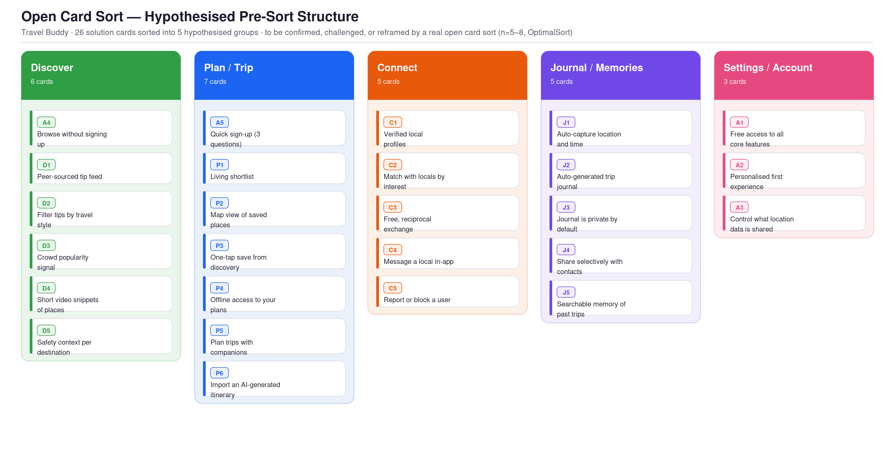

Travel Buddy
Agreement với product và business: Not available
Gates
Warnings
- ⚠ T1 Test này dùng người mô phỏng, không phải người dùng thật: chưa tính là evidence
- ⚠ T2 Test này mới ở dạng kế hoạch, chưa chạy
- ⚠ H1H2H3H4H5H6 Hypothesis này chưa có evidence từ người dùng thật
- ⚠ P1P2P3P4P5P6P7P8P9P10 Principle chưa có câu hỏi có/không để kiểm tra
Alignment
| Decision | Hypothesis | Opportunity | Test | Follows | Pulls against |
|---|---|---|---|---|---|
| D1 Tab Explore mở ở mode Near Me; Country và Map là cách khám phá xa hơn | H2 | O2 | T1T2 | — | — |
| D2 Khách duyệt mọi mode không cần tài khoản; chỉ đòi đăng ký khi Save hoặc Connect | H3 | O5 | T1T2 | — | — |
| D3 Hiện crowd signal (xanh, hổ phách, đỏ) thay cho huy hiệu độ phổ biến | H2 | O2 | T1T2 | — | — |
| D4 Lưu một chạm từ bất kỳ tip nào vào shortlist của chuyến đi | H1 | O1 | T1T2 | — | — |
| D5 Cho nhập lịch trình do AI viết vào kế hoạch chuyến đi | H1 | O1 | T1T2 | — | — |
| D6 Kết nối theo khung trao đổi hai chiều, hồ sơ xác minh; nhắn tin chỉ mở sau khi cả hai quan tâm | H4 | O4 | T1T2 | — | — |
| D7 Nhật ký tự ghi, riêng tư mặc định, chỉ chia sẻ với người được chọn | H5H6 | O3 | T1T2 | — | — |
Cách đọc báo cáo và các từ khoá
Điểm chính: mỗi decision đều lần ngược được về user need đứng sau nó. Dùng menu bên trái để đi tới từng trang. Mở các mục có dấu ⚠ trong Insights để thấy chỗ cần xem lại.
- Opportunity
- Điều người dùng cần hoặc đang gặp khó, có evidence. Không phải một feature.
- Hypothesis
- Điều nhóm tin là đúng, kèm cách sẽ biết nó đúng hay sai.
- Decision
- Một lựa chọn thiết kế cụ thể, kèm lý do.
- Test
- Cách kiểm chứng một hypothesis với người dùng thật.
- Metric
- Con số cho biết hypothesis đúng hay sai. Nhãn assumed nghĩa là chưa được người phụ trách sản phẩm xác nhận.
- Principle
- Quy tắc thiết kế mà mọi decision cần đạt, ví dụ 10 usability heuristics của Nielsen (P1 đến P10).
- Gate
- Bước kiểm tra trước khi sang giai đoạn sau.
- Alignment
- Mức độ mỗi decision nối được về opportunity và đạt các principle.
Journey
Các trang theo giai đoạn, mỗi trang kể lại một phần của dự án.
Scope
Business question, outcome, agreement
02 · DiscoverEvidence
Điều đã học từ nguồn, mỗi claim một nguồn
03 · DefineProblem brief
Opportunity, hypothesis, metric, principle
04 · DevelopOptions, flows and prototype
Các hướng đã khám phá, decision
05 · DevelopAlignment check
Principle audit, verdict
06 · DeliverFindings
Kết quả test với người dùng
07 · DeliverHandoff and measurement
Handoff pack, measurement plan
Scope
Business question, outcome mà nó cần thúc đẩy, và agreement với business.
Business question
Một app đồng hành du lịch gom việc tìm gợi ý đáng tin, kết nối với người địa phương và lập kế hoạch rồi lưu chuyến đi vào một nơi có thể thay thế 8 đến 10 app mà du khách đang dùng không?
Outcome and success
Người dùng mới thấy giá trị ngay trong phiên đầu rồi coi Travel Buddy là nơi duy nhất cho khám phá và lập kế hoạch. Metric: thời gian tới tương tác đầu tiên dưới 30 giây, và từ 25% khách bấm Save đăng ký. Cả hai đều assumed và chưa có baseline.
Users and constraints
Du khách 18 đến 45 tuổi, đã đi chơi trong 12 tháng, dùng điện thoại. Ràng buộc: mô hình free-first, dùng được offline, dữ liệu vị trí nhạy cảm, nguồn lực nghiên cứu nhỏ.
What we believed before we started
- RH1: du khách không tin review thương mại
- RH3: du khách phải xoay sở nhiều app
- RH9: du khách lập kế hoạch lỏng và linh hoạt khi tới nơi
- RH10: chi phí chuyển đổi là rào cản chính khi thử app mới
- (RH2, RH4 đến RH8: xem
learnings/discover-scope.md)
Agreement
Status: not available
Dự án là bài thực hành học thuật; stakeholder được mô phỏng, không có người thật xác nhận.
Evidence
Điều đã học từ các nguồn, mỗi claim có một nguồn. Competitor analysis là ví dụ đầu tiên.
Decision this informs
Travel Buddy nên đứng ở đâu so với các nền tảng đang có, và nên ưu tiên nhu cầu nào trước.
Our answer
Đứng ở chỗ chưa ai phủ: tip từ người thật có danh tính, kết nối phi giao dịch, lập kế hoạch và nhật ký trong một nơi, miễn phí. Ưu tiên lập kế hoạch (O1) và khám phá bản địa (O2). Mức chắc chắn: vừa phải; mẫu nhỏ (13 khảo sát, 1 phỏng vấn).
What users said
Từ phỏng vấn P1 và khảo sát. Mẫu rất nhỏ, chỉ mang tính gợi ý.
| Theme | Quotes | Sources or people | Example quote ID | Counter-quote |
|---|---|---|---|---|
| Phân mảnh là nỗi đau chính | 2 | 1 người (P1) | P1 | chưa có |
| Đối chiếu chéo nguồn để tin | 1 | 1 người (P1) | P1 | chưa có |
| Muốn tri thức địa phương, chưa biết hỏi ai | 1 | 1 người (P1) | P1 | chưa có |
| Ghi nhật ký: mong muốn lớn hơn thực hiện | 1 | 1 người (P1) | P1 | chưa có |
Giới hạn: một người phỏng vấn; khảo sát 13 phản hồi, lệch về châu Á và người trẻ. Chưa nghe phía cung (người địa phương).
Who we compared, and why
Năm đối thủ theo vai trò trong hành trình của du khách (TripAdvisor, Google Maps, Foursquare, Polarsteps, Airbnb Experiences) và AI chat tool, được thêm sau phỏng vấn P1.
Comparison (verified)
| Criterion | TripAdvisor | Google Maps | Polarsteps | Airbnb Exp. |
|---|---|---|---|---|
| Khám phá địa phương | có | có | không | một phần |
| Kết nối với người địa phương | không | không | không | có |
| Nhật ký chuyến đi | không | không | có | không |
| Miễn phí | có | có | có | không |
Bản đầy đủ gồm Foursquare và AI chat tool, mười tiêu chí: learnings/discover-competitor-analysis.md.
Beliefs we tested
| What we believed | Verdict | Evidence |
|---|---|---|
| RH1: du khách không tin review thương mại | Supported | Mẹo người địa phương 4,46/5 so với 3,31/5; 10/13 từng thất vọng; P1 |
| RH3: du khách dùng nhiều app | Supported (mạnh hơn trong phỏng vấn) | 5/13 nêu phân mảnh; P1 dùng 8 đến 10 app |
| RH6: du khách sẵn lòng làm guide | Not addressed | Chưa phỏng vấn người địa phương |
| RH10: chi phí chuyển đổi là rào cản chính | Contradicted một phần | Giá (7/13) là số 1; mạng lưới bạn bè chỉ 2/13 |
Insights
Insight 1: lập kế hoạch ở một nơi là hook, khám phá bản địa là cửa vào
Hỗ trợ O1 và O2. Phản biện mạnh nhất: thứ hạng này thay đổi khi mẫu tăng từ 8 lên 13, nên có thể còn đổi nữa.
What this cannot tell us
Nhu cầu ghi nhật ký là hành vi hay mong muốn; phía người địa phương có tham gia không; người dùng thật phản ứng ra sao với prototype.
Sources and method
- Khảo sát trực tuyến, 13 phản hồi hợp lệ (tháng 6/2026):
learnings/sources/anonymised/04_User_Survey.md - Phỏng vấn P1 (tháng 6/2026):
learnings/sources/anonymised/05_User_Interview_Guide.md - Phân tích đối thủ từ nguồn công khai:
learnings/sources/anonymised/03_Competitor_Research_SWOT.md
Phương pháp: tổng hợp thủ công, không dùng AI để code dữ liệu; không có bản nháp của AI để tính tỷ lệ lỗi.
Problem brief
Yêu cầu chung: outcome, các opportunity đã xếp hạng, hypothesis, success metric và các principle để kiểm tra.
Outcome and success
Người dùng mới thấy giá trị ngay trong phiên đầu và coi Travel Buddy là nơi duy nhất cho khám phá và lập kế hoạch. Đồng ký bởi: không có (stakeholder được mô phỏng).
Opportunities (ranked)
Nhu cầu người dùng có evidence, không phải feature. Xếp hạng chúng.
| Rank | ID | Opportunity |
|---|---|---|
| 1 | O1 | Du khách muốn lập kế hoạch linh hoạt ở một nơi, thay vì xoay 8 đến 10 app |
| 2 | O2 | Du khách muốn gợi ý bản địa đáng tin, không thương mại |
| 3 | O3 | Du khách muốn lưu giữ chuyến đi mà không tốn công |
| 4 | O4 | Du khách muốn kết nối với người địa phương theo cách an toàn, miễn phí và không giao dịch |
| 5 | O5 | Du khách cần vượt qua các rào cản dùng thử: giá, quyền riêng tư và mạng lưới bạn bè |
Hypotheses
Chúng tôi tin rằng [decision] dành cho [users] sẽ [thay đổi gì], và chúng tôi sẽ biết nhờ [test và metric].
| ID | Hypothesis | Serves | Test |
|---|---|---|---|
| H1 | Lưu bằng một chạm và nhập lịch trình AI cho phép đưa thông tin vào kế hoạch mà không phải chép tay | O1 | T1, T2 |
| H2 | Tip có danh tính người đóng góp và crowd signal giúp người dùng tự đánh giá độ tin cậy | O2 | T1, T2 |
| H3 | Cho duyệt không cần tài khoản và chỉ đòi đăng ký khi Save là một đánh đổi chấp nhận được | O5 | T1, T2 |
| H4 | Khung trao đổi hai chiều cùng hồ sơ xác minh khiến người dùng nhắn cho người địa phương mà không do dự | O4 | T1, T2 |
| H5 | Người dùng tự tìm thấy nhật ký tự sinh mà không cần được chỉ | O3 | T1, T2 |
| H6 | Nhật ký riêng tư mặc định và chia sẻ theo người cụ thể đáp ứng nhu cầu chia sẻ | O3 | T1, T2 |
Success metrics
Goal, rồi signal, rồi metric. Ghi assumed cho mọi thứ PO chưa xác nhận.
| ID | Metric | Baseline | Status |
|---|---|---|---|
| M1 | Tỷ lệ hoàn thành task không cần trợ giúp từ 80% (dưới 60% là ưu tiên thiết kế lại) | chưa có | assumed |
| M2 | SEQ từ 5,5/7 mỗi task (dưới 4,5 bị đánh dấu) | chưa có | assumed |
| M3 | SUS từ 68/100 (trên trung bình), dùng làm kiểm tra sức khoẻ chung, không phải ngưỡng đạt | chưa có | assumed |
| M4 | Thời gian tới tương tác đầu tiên với một tip dưới 30 giây từ lúc mở app | chưa có | assumed |
| M5 | Từ 25% khách bấm Save chuyển thành người dùng đã đăng ký | chưa có | assumed |
Principle checks
Các principle P1 đến P10 (10 heuristics của Nielsen) và principle riêng của tổ chức nằm ở learnings/context-principle-checks.md. Dự án gốc chưa viết câu hỏi có/không cho từng principle; đây là khoảng trống đã được ghi ở gate 2d.
Agreement
Status: not available. Không có người đồng ký thật.
Options, flows and prototype
Điều đã khám phá, điều đã chọn, và mỗi design decision kèm lý do.
Directions explored
Ba hướng định vị: lập kế hoạch dẫn đầu, khám phá bản địa dẫn đầu, nhật ký dẫn đầu. Chọn: khám phá là cửa vào, lập kế hoạch là hook định vị; nhật ký và kết nối là trụ hỗ trợ. Chi tiết và lý do gác lại hai hướng còn lại: learnings/develop-options.md. (Ba hướng được rút ra từ các "open tension" của dự án gốc, không phải một bước chọn hướng chính thức.)
Flows and content
Hành trình đầu cuối theo bốn giai đoạn của chuyến đi: Onboarding, Pre-trip, In-destination, Post-trip. Sơ đồ: learnings/reference/08_E2E_User_Flow.md. Information architecture (hypothesis trước card sort): xem tài liệu Information architecture và card sort trong mục Tài liệu.
Prototype
Prototype high-fidelity mobile, 32 màn hình, 4 flow: learnings/prototype/. Đây là tài liệu tham chiếu cho developer, không phải production code.
Design decisions
| ID | Decision | Tests | Follows | Pulls against |
|---|---|---|---|---|
| D1 | Tab Explore mở ở mode Near Me; Country và Map là cách khám phá xa hơn | H2 | — | — |
| D2 | Khách duyệt mọi mode không cần tài khoản; chỉ đòi đăng ký khi Save hoặc Connect | H3 | — | — |
| D3 | Hiện crowd signal (xanh, hổ phách, đỏ) thay cho huy hiệu độ phổ biến | H2 | — | — |
| D4 | Lưu một chạm từ bất kỳ tip nào vào shortlist của chuyến đi | H1 | — | — |
| D5 | Cho nhập lịch trình do AI viết vào kế hoạch chuyến đi | H1 | — | — |
| D6 | Kết nối theo khung trao đổi hai chiều, hồ sơ xác minh; nhắn tin chỉ mở sau khi cả hai quan tâm | H4 | — | — |
| D7 | Nhật ký tự ghi, riêng tư mặc định, chỉ chia sẻ với người được chọn | H5, H6 | — | — |
Alignment check
Mỗi decision có lần ngược được về brief và đạt các principle không? Sửa, chấp nhận như một trade-off đã ghi lại, hoặc cắt.
Principle audit
Chưa làm. Cần viết learnings/context-principle-checks.md cho Travel Buddy trước, rồi chấm lại ba decision quan trọng nhất (D2, D6, D7).
Verdict on each warning
| Warning | Verdict | Reason |
|---|---|---|
| Mười principle chưa có câu hỏi có/không | Fix | Cần để chạy principle audit; làm trước khi bàn giao |
| Mọi hypothesis chưa có bằng chứng từ người dùng thật | Accept for now | Đã có kế hoạch test không điều phối (T2); chạy với người thật trước khi coi gate 4a là đạt |
| T1 dùng người mô phỏng | Accept as trade-off | Dùng như pilot để tìm vấn đề sớm, không dùng làm bằng chứng |
Gate
Bạn có bảo vệ được mọi decision bằng cách chỉ vào brief không? Về truy vết: có, mọi decision nối được về một hypothesis và một nhu cầu. Về bằng chứng: chưa, vì các hypothesis chưa được kiểm tra với người thật.
Findings
Người dùng thật đã làm gì: task success, thời gian, lỗi và mức hài lòng, đặt cạnh baseline.
Quan trọng: kết quả dưới đây từ vòng test mô phỏng (T1), không phải người thật. Chúng là hypothesis cần xác nhận.
Tests
| ID | Test | Tests | Measures |
|---|---|---|---|
| T1 | Usability test điều phối, mô phỏng (ba persona do người nghiên cứu đóng vai) | H1, H2, H3, H4, H5, H6 | M2, M3 |
| T2 | Usability test không điều phối, 8 đến 12 người (đã lên kế hoạch, chưa chạy) | H1, H2, H3, H4, H5, H6 | M1, M2, M3 |
Results against the baseline
| Metric | Baseline | Result | Met? |
|---|---|---|---|
| M1: task success | chưa có | T1, T2, T4 hoàn thành; T3 bằng đường vòng; T5 bị chặn | no |
| M2: SEQ | chưa có | 4,6/7 | no |
| M3: SUS | chưa có | 69,2/100 | yes (mô phỏng, chỉ mang tính tham khảo) |
Findings, weighted by importance
Hai phát hiện Critical, cùng một nguyên nhân: thiếu mẫu tương tác "tìm một người cụ thể và mời". Nó khiến hai flow độc lập (Connect và chia sẻ nhật ký) cùng thất bại. Hai phát hiện Major: danh sách người địa phương trộn nhiều thành phố; bộ phân tích lịch trình AI không sắp vào cấu trúc ngày. Còn lại là Minor và Cosmetic. Đầy đủ: learnings/deliver-findings.md.
What changed because of this
Cần thiết kế một mẫu "tìm người và mời" dùng chung (chưa thực hiện). Thêm vào case log khi quyết định. Phải chạy lại với người thật trước khi dùng kết quả để quyết định.
Handoff and measurement
Những gì developer cần để dựng mà không phải hỏi lại, và những gì cần theo dõi sau khi launch.
Trạng thái: chưa sẵn sàng bàn giao. Mới có PRD cho một tab (Explore).
Handoff pack
- Prototype:
learnings/prototype/ - Decisions and reasons: Case log
- Acceptance notes: xem PRD tab Explore, mục 8 (
learnings/reference/11_Explore_Requirements.md) - Open questions: crowd signal lấy dữ liệu từ đâu; video do ai tải; Map mode mặc định ở đâu; số tip tối thiểu cho một điểm đến
Measurement plan (after launch)
| Metric | Where to track it | Who owns it | Review date |
|---|---|---|---|
| M4: thời gian tới tương tác đầu tiên | Analytics của app | chưa có | chưa đặt |
| M5: khách chuyển thành người dùng đã đăng ký | Analytics của app | chưa có | chưa đặt |
How the AI-assisted workflow performed
Không áp dụng: dự án gốc được làm trước khi có quy trình AI-assisted, nên không có số đếm nào (thời gian mỗi step, tỷ lệ lỗi, số lần làm lại).
Documents
Các output làm ra trong dự án: phân tích, persona, survey, flow, prototype. Mỗi document nối với các decision mà nó hỗ trợ.
Kết quả khảo sát và tổng hợp nghiên cứu
13 phản hồi hợp lệ (17 gửi, 4 trống). Mẹo của người địa phương được tin hơn review của người lạ; lập kế hoạch là tính năng quan trọng nhất.
Competitor analysisPhân tích đối thủ và SWOT
Năm đối thủ cùng AI chat tool, so sánh trên mười tiêu chí: không ai phủ cả ba trụ khám phá, kết nối và nhật ký, miễn phí.
Interview synthesisTổng hợp phỏng vấn người dùng (P1)
Một cuộc phỏng vấn (P1) trong 5 đến 8 dự kiến: sáu chủ đề, trong đó phân mảnh là nỗi đau chính.
PersonaBa persona: Aisha, Marco, Ji-yeon
Ba persona dựng từ khảo sát (n=13) và một phỏng vấn; Aisha được định khung lại để gồm đặc điểm của một Pragmatic Planner.

Information architectureInformation architecture và card sort
Sitemap hypothesis (7 mục cấp 2) và bảng card sort 26 thẻ vào 5 nhóm. Chưa được xác nhận bằng một card sort thật.
Solution poolSolution pool: 26 giải pháp theo năm trụ
Danh sách giải pháp tiềm năng (ID SP-*) trước khi ưu tiên, theo năm trụ: Discover, Connect, Plan, Journal, Adoption.
User flowE2E user flow: bốn giai đoạn của chuyến đi
Hành trình đầu cuối từ onboarding tới sau chuyến đi, với 26 giải pháp được đặt vào bốn giai đoạn.
Requirements (PRD)PRD tab Explore
Yêu cầu cho tab khám phá: ba mode (Near Me, Country, Map), crowd signal, lưu một chạm, khách duyệt không cần tài khoản.
PrototypePrototype Travel Buddy (wireframe)
Wireframe các màn hình chính của prototype 32 màn hình, 4 flow. Mở ngay trong trang hoặc ở tab mới.
Test reportBáo cáo usability test (mô phỏng)
Vòng test điều phối với ba persona do người nghiên cứu đóng vai. Hai phát hiện Critical có chung một nguyên nhân: thiếu mẫu tìm người và mời.
Test planKế hoạch usability test không điều phối
Kế hoạch cho 8 đến 12 người, năm task theo hành trình, đo bằng task success, SEQ và SUS. Chưa chạy.
Competitor analysis · Discover
Phân tích đối thủ và SWOT
Năm đối thủ cùng AI chat tool, so sánh trên mười tiêu chí: không ai phủ cả ba trụ khám phá, kết nối và nhật ký, miễn phí.
Verified
Key takeaways
- Không có đối thủ nào phủ cả ba trụ cùng lúc và miễn phí.
- TripAdvisor và Google Maps sở hữu khám phá nhưng không có kết nối hay nhật ký; Polarsteps làm tốt nhật ký nhưng không có khám phá.
- AI chat tool vừa là đối thủ vừa là cơ hội: lịch trình chúng sinh ra không có nơi để đi tiếp.
Media
Working file cho competitor flow. Các nguồn bạn đã lưu nằm trong sources/anonymised/.
Scope
- Decision mà phân tích này phục vụ: Travel Buddy nên đứng ở đâu so với các nền tảng đang có, và không nên cạnh tranh trực tiếp ở đâu
- Các tiêu chí quan trọng (tối đa 6): bao phủ ba trụ (khám phá, kết nối, lập kế hoạch và nhật ký); miễn phí; riêng tư; nội dung có đáng tin không; hoạt động offline; đầu ra có cấu trúc và lưu lại được
- Điều tôi đã tin: không nền tảng nào phủ cả ba trụ (RH1, RH3)
Competitors
Năm đối thủ, theo vai trò trong hành trình của du khách:
| Đối thủ | Vai trò | Trụ bị chạm |
|---|---|---|
| TripAdvisor | Khám phá bằng review của người lạ | Discover |
| Google Maps | Khám phá và điều hướng | Discover |
| Foursquare | Tip theo ngữ cảnh | Discover |
| Polarsteps | Nhật ký chuyến đi, chia sẻ | Journal, Share |
| Airbnb Experiences | Kết nối với người địa phương (có phí) | Connect |
| AI chat tool (thêm sau phỏng vấn P1) | Soạn lịch trình; kết quả không lưu có cấu trúc | Plan |
Evidence (verified)
Nguồn: sources/anonymised/03_Competitor_Research_SWOT.md, mục 3.4. Ký hiệu: có = bao phủ tốt, một phần, không.
| Tiêu chí | TripAdvisor | Google Maps | Foursquare | Polarsteps | Airbnb Exp. | AI chat tool |
|---|---|---|---|---|---|---|
| Khám phá địa phương | có | có | có | không | một phần | một phần |
| Tip chọn lọc, cá nhân | không | không | có | không | một phần | không |
| Kết nối với người địa phương | không | không | một phần | không | có | không |
| Lập kế hoạch chuyến đi | một phần | một phần | không | không | không | một phần |
| Nhật ký chuyến đi | không | không | một phần | có | không | không |
| Chia sẻ | không | không | một phần | có | không | không |
| Dùng được offline | không | có | không | có | không | không |
| Miễn phí | có | có | có | có | không | có |
| Thiết kế ưu tiên riêng tư | không | không | không | có | một phần | không |
| Đầu ra có cấu trúc, lưu lại | một phần | một phần | không | có | không | không |
Patterns
- Không có đối thủ nào phủ cả ba trụ (khám phá, kết nối, nhật ký) cùng lúc, và miễn phí.
- TripAdvisor và Google Maps sở hữu khám phá nhưng không có kết nối hay nhật ký. Polarsteps làm tốt nhật ký nhưng không có khám phá. Airbnb Experiences có kết nối nhưng qua paywall. Foursquare chứng minh tip theo ngữ cảnh tốt hơn điểm sao, rồi rời thị trường người dùng cuối.
- Khoảng trống: một nền tảng phục vụ du khách theo thời gian thực, trên cả ba trụ, miễn phí.
- Phản biện: Google có hạ tầng để sao chép bất kỳ tính năng nào ở quy mô lớn.
Insights + decision
- Khám phá bằng người thật, không bằng điểm sao. Hỗ trợ: TripAdvisor bị mất lòng tin vì review giả; Foursquare cho thấy tip theo ngữ cảnh hiệu quả hơn.
- Kết nối phải phi giao dịch. Hỗ trợ: sự chân thực là động lực chính của trải nghiệm tốt trên Airbnb Experiences, nhưng nó nằm sau paywall.
- Nhật ký phải tự động, riêng tư mặc định. Hỗ trợ: Polarsteps tăng trưởng nhờ nhật ký ít công sức và thiết kế ưu tiên riêng tư.
- AI chat tool vừa là đối thủ, vừa là cơ hội. Chúng sinh ra lịch trình dạng chữ không có nơi để đi tiếp; nhập lịch trình AI vào Travel Buddy biến nó thành điểm vào (SP-P6).
Decision cho câu hỏi ở Scope: Travel Buddy không nên cạnh tranh trực tiếp về dữ liệu bản đồ hay khối lượng review; nên đứng ở chỗ không ai phủ: tip từ người thật có danh tính, kết nối phi giao dịch, và lập kế hoạch cùng nhật ký trong một nơi, miễn phí.
Giới hạn của phân tích này: phân tích dựa trên nguồn công khai, chưa kiểm tra bằng người dùng thật; chỉ cho thấy đối thủ làm gì, không cho thấy vì sao người dùng chọn họ.
Source: ../../learnings/discover-competitor-analysis.md
Information architecture · Define
Information architecture và card sort
Sitemap hypothesis (7 mục cấp 2) và bảng card sort 26 thẻ vào 5 nhóm. Chưa được xác nhận bằng một card sort thật.
⚠ Document này ở trạng thái Draft: nội dung chưa được kiểm tra.
Key takeaways
- Bảy mục cấp hai: Onboarding, Dashboard, Discover, Plan/Trip, Connect, Journal/Memories, Profile & Settings.
- Cấu trúc này là hypothesis trước khi sort; nhãn tab Explore có thể đổi theo kết quả.
Media
Thả thêm ảnh vào folder này (ví dụ kết quả card sort thật) và chúng sẽ tự hiện ở trang tài liệu.
Interview synthesis · Discover
Tổng hợp phỏng vấn người dùng (P1)
Một cuộc phỏng vấn (P1) trong 5 đến 8 dự kiến: sáu chủ đề, trong đó phân mảnh là nỗi đau chính.
Verified
Key takeaways
- Phân mảnh là nỗi đau chính: khó khăn là chép thông tin giữa các công cụ, không phải thiếu thông tin.
- Đối chiếu chéo nguồn là thuật toán tin cậy cá nhân của P1.
- Mới một người: chỉ là gợi ý, cần thêm người tham gia.
Media
Working file cho user-voice flow. AI chỉ trả về section của nó, và bạn tự dán vào. Quote đã ẩn danh nằm trong sources/anonymised/ kèm ID (R01, I01-01 ...).
Scope
- Câu hỏi: du khách tìm, lập kế hoạch và lưu giữ chuyến đi như thế nào, và đau ở đâu?
- Cần nghe từ ai: du khách đã đi chơi trong 12 tháng gần nhất, dùng điện thoại; ưu tiên 18 đến 45 tuổi
- Điều tôi đã tin: RH1 đến RH10 (xem
scope.md)
Sources and guide
- Khảo sát trực tuyến: 17 lượt gửi, 13 hợp lệ (4 trả lời trống bị loại). 7 người ở châu Á, 6 ở châu Âu; đa số 18 đến 24 tuổi. Công cụ:
sources/anonymised/04_User_Survey.md - Phỏng vấn bán cấu trúc: 1 trong 5 đến 8 dự kiến (P1, ghi nhận tháng 6/2026). Hướng dẫn:
sources/anonymised/05_User_Interview_Guide.md - Kết quả tổng hợp đầy đủ:
sources/anonymised/05_Research_Synthesis.md - Chưa làm: nhật ký nghiên cứu (3 đến 5 người), phỏng vấn người địa phương (5 đến 8 người)
Coding (verified)
Theo dõi mười research hypothesis (nguồn: 05_Research_Synthesis.md). Số liệu khảo sát: n=13.
| # | Hypothesis | Tín hiệu khảo sát | Tín hiệu phỏng vấn (P1) | Trạng thái |
|---|---|---|---|---|
| RH1 | Không tin review thương mại | Xác nhận: mẹo của người địa phương 4,46/5 so với review người lạ 3,31/5; 10/13 từng thất vọng | Đối chiếu chéo nhiều nền tảng, không tin một nguồn | hội tụ |
| RH2 | Muốn trải nghiệm bản địa | Xác nhận: "khó tìm trải nghiệm bản địa" là bức xúc số 1 (9/13) | Muốn biết người địa phương thật sự đi đâu | hội tụ |
| RH3 | Dùng từ 3 app trở lên | Tín hiệu tăng: 5/13 nêu phân mảnh | 8 đến 10 app mỗi chuyến; phân mảnh là vấn đề số 1 | mạnh dần |
| RH4 | Muốn kết nối phi giao dịch | Xác nhận: 12/13 mở lòng; 9/13 chọn "không có tiền" | Sẵn sàng nhắn người địa phương nếu có tín hiệu an toàn | hội tụ |
| RH5 | Niềm tin là rào cản kết nối | Xác nhận: danh tính xác minh 11/13 | Cần người địa phương thật, tự nguyện, có hồ sơ | hội tụ |
| RH6 | Sẵn lòng làm guide | Chưa kiểm tra trong khảo sát | Chưa có | cần phỏng vấn người địa phương |
| RH7 | Bỏ nhật ký khi tốn công | Xác nhận: 7/13 không ghi hoặc muốn hoàn toàn tự động | Chụp ảnh nhưng quên tên và chi tiết | hội tụ |
| RH8 | Chia sẻ riêng tư | Chưa kết luận: 6/13 chọn riêng tư mặc định | Lưu trữ chủ yếu cho bản thân | mạnh dần |
| RH9 | Lập kế hoạch lỏng, linh hoạt | Xác nhận mạnh: 9/13 | Bảng tính trước chuyến đi, 30 đến 40% đổi tại chỗ | xác nhận |
| RH10 | Chi phí chuyển đổi là rào cản chính | Xác nhận, có bất ngờ: giá 7/13 là số 1 | Sẽ chuyển nếu gom được khám phá, kế hoạch và sắp xếp | hội tụ |
Themes
Từ một người (P1). Chỉ là hypothesis cần xác nhận với thêm người tham gia.
- Phân mảnh là nỗi đau chính, không phải thiếu thông tin. P1 dùng 8 đến 10 công cụ; khó khăn là chép thông tin giữa chúng. "I wish there was an easier way to gather, organize, and manage everything in one place instead of jumping between so many apps." (P1)
- Đối chiếu chéo nguồn là thuật toán tin cậy cá nhân. "If a restaurant shows up on TikTok, Google Maps, travel groups, and is also recommended by someone I know, I feel much more confident about trying it." (P1)
- Muốn tri thức địa phương nhưng chưa biết hỏi ai. "I don't really know how to find the right local person to ask." (P1)
- Kế hoạch có cấu trúc trước chuyến đi, ngẫu hứng khi tới nơi. Khoảng 30 đến 40% chuyến đi thay đổi so với kế hoạch (P1).
- Mong muốn ghi nhật ký lớn hơn khả năng thực hiện. "I think, 'I'll remember this later,' or 'I'll organize everything when I get home,' but that doesn't always happen." (P1)
- Chia sẻ trong vòng thân thiết và mang tính chức năng, không phát công khai. Với P1, kho lưu chuyến đi chủ yếu để nhớ lại.
Opportunities + limits
Năm nhu cầu, sắp theo mức quan trọng người dùng gán cho tính năng (khảo sát, n=13):
- Lập kế hoạch linh hoạt ở một nơi (4,38/5, hạng 1) →
hub/O1.md - Khám phá trải nghiệm bản địa đáng tin (3,85/5, hạng 2) →
O2.md - Lưu giữ ký ức không tốn công (3,62/5, hạng 3) →
O3.md - Kết nối an toàn, miễn phí với người địa phương (3,38/5, hạng 4) →
O4.md - Vượt qua rào cản dùng thử: giá, quyền riêng tư, mạng lưới bạn bè →
O5.md
Điều mẫu này không cho biết:
- Mẫu nhỏ (13), lệch về châu Á và người trẻ; mọi tỷ lệ chỉ mang tính định hướng.
- Một cuộc phỏng vấn (P1): mới có thể coi là gợi ý, chưa phải mẫu.
- Phía cung (người địa phương) chưa được nghiên cứu.
- Khảo sát nhiều lựa chọn có thể đánh giá thấp những nỗi đau mang tính hệ thống như phân mảnh.
- Nhu cầu ghi nhật ký có thể là mong muốn chứ chưa phải hành vi; cần nghiên cứu nhật ký.
Source: ../../learnings/discover-user-voice-synthesis.md
Persona · Define
Ba persona: Aisha, Marco, Ji-yeon
Ba persona dựng từ khảo sát (n=13) và một phỏng vấn; Aisha được định khung lại để gồm đặc điểm của một Pragmatic Planner.
Verified
Key takeaways
- Aisha (Explorer / Pragmatic Planner): lập kế hoạch kỹ, dùng 8 đến 10 công cụ, đổi 30 đến 40% khi tới nơi.
- Marco (Connector): muốn gặp người địa phương nhưng cần xác minh danh tính và không tiền.
- Ji-yeon (Documenter): chụp nhiều nhưng không có hệ thống; muốn tự động và riêng tư.
Project: Travel Buddy | Phase: Discovery Linked to: 05_Research_Synthesis.md · 01_Research_Hypotheses.md Status: Updated to n=13 survey data · P1 interview complete — Aisha reframed to include Pragmatic Planner traits · ⚠️ flags on Ji-yeon partially resolved
Note on confidence: Based on survey data (n=13) and one user interview (P1). Sections marked with ⚠️ that P1 partially resolved are noted inline. Remaining ⚠️ flags require additional interview participants.
1. Literature Review
A persona is "the creation of a representative user based on available data and user interviews. Though the personal details of the persona may be fictional, the information used to create the user type is not" (Gladkiy, 2016, as cited in Dippner, 2022, p. 140). Personas exist because, as Garrett (2011, p. 42) reminds us, "we are not designing for ourselves; we are designing for other people" (as cited in Dippner, 2022, p. 107). Without them, teams risk building products shaped by internal assumptions rather than real user needs. Marsh (2018) describes personas as one of the core methods for presenting research insights, alongside affinity diagrams and journey maps, because they translate patterns from raw data into something the whole team can reason with (as cited in Dippner, 2022, p. 206). For Travel Buddy, three personas were developed rather than one or four because the product is built around three distinct pillars: Discover, Connect, and Plan and Share. Each pillar addresses a fundamentally different need, and the survey data confirmed that these differences are real. The Explorer is a curious, practical traveler who creates detailed pre-trip plans but adapts constantly on arrival — her core frustration is not just poor discovery but the fragmentation of planning across too many tools. P1 interview data prompted a reframe of this persona to absorb the Pragmatic Planner archetype, which surveys confirmed is the primary Trip Planning user type. The Connector is someone who wants to meet locals in an authentic, non-transactional way but has never had a safe tool to do it. The Documenter captures everything on a trip but has no system for organizing or sharing those memories without it feeling like extra work.
2. Problem Definition
Travelers are surrounded by more information than ever, and trust almost none of it. Survey data (n=13) shows local recommendations score 4.46 / 5 in trust while TripAdvisor star ratings score 3.38 and stranger reviews 3.31. Yet the apps travelers rely on are built almost entirely around those lower-trust sources. 10 of 13 respondents have been disappointed by a highly-reviewed place.
The problem spans three stages of travel, now reordered to reflect feature importance rankings from the expanded dataset:
- Planning is fragmented and inflexible. 9 of 13 travelers plan loosely and adapt constantly, yet planning is the feature they rate most important (4.38 / 5). "I have to use many different apps" rose to 5/13 as a top frustration. P1 interview confirmed this qualitatively: travelers use 8–10 tools per trip and manually move information between each one — TikTok → Google Maps → Google Sheets → AI tools — with no automation at any step. Existing tools force a choice between rigid itineraries or scattered saves across multiple apps.
- Discovery is broken. Platforms surface what is commercially popular, not what is genuinely worth visiting. "Hard to find authentic local experiences" was the #1 frustration (9/13), and local discovery ranked second in feature importance (3.85 / 5).
- Connection is untapped. 12 of 13 travelers are open to meeting locals, but no current tool makes it feel safe, free, and non-transactional at the same time. Verified identity (11/13), no monetary exchange (9/13), and shared interests on profile (8/13) are all required.
- Memory fades by default. 7 of 13 either do not document at all or want it fully automatic. Auto-capture and a beautiful auto-generated layout are now co-equal top journal features (both 8/13). Journaling ranks third in feature importance (3.62 / 5) — strong, but no longer the lead hook.
Travel tools optimize for volume and reach, not for trust, ease, and human connection. Travel Buddy's opportunity is to close that gap across the full travel journey, with flexible trip planning as the primary acquisition hook.
3. Personas
Persona 1: The Explorer / Pragmatic Planner
"I look things up before I go, build a whole planner, and still end up winging 30% of it once I'm there. The problem isn't finding information — it's that I have to collect it from everywhere myself."
Note: Reframed after P1 interview (Jun 2026) to absorb Pragmatic Planner archetype. Aisha now represents the traveler who plans seriously but flexibly, and whose primary pain is fragmentation — not just poor discovery.
| Name | Aisha |
| Age | 26 |
| Occupation | Content coordinator (remote) |
| Location | Kuala Lumpur, Malaysia |
| Travel frequency | 1–3 trips per year, mix of regional and international |
| Travel style | Mix — comfortable travel focused on food, culture, and sightseeing |
Bio
Aisha does her research. Before any trip she has a Google Sheets planner with a budget, shortlist of restaurants, must-see spots, and rough itinerary. She uses Google, TikTok, ChatGPT, YouTube, Facebook travel groups, and Google Maps — sometimes all on the same trip. The problem is that every discovery in one app has to be manually moved to the next. She finds the restaurant on TikTok, saves the location on Maps, confirms it in a Facebook group, then types it into her spreadsheet. By the time she arrives, she has a solid plan — but she built it through sheer effort, not good tools. Once on the ground, she stays flexible: 30–40% of her best moments come from spontaneous detours or recommendations she picks up along the way. She represents the most common user in the survey: a Mix traveler who plans seriously but hates being locked in.
Goals
- Find places that feel worth going to, not just highly reviewed
- Build a trip plan without manually stitching information across six apps
- Come home with memories she can actually find and share
Frustrations
- Moving information between apps is the most time-consuming part of planning — and no tool fixes it
- AI tools like ChatGPT generate good itinerary ideas, but the outputs have nowhere to go
- Highly-reviewed places consistently disappoint with crowds, inaccurate photos, and a commercial vibe
- She cannot always tell which recommendation is from a local and which is from a tourist who visited once
Motivation
- A trip that feels genuinely local, not a tourist loop of the same five places
- The efficiency of having everything in one place so she can focus on the trip, not the prep
- Returning home with clear memories of where she went and why it mattered
Expectation
- Recommendations she can trust across discovery, confirmation, and saving — without switching apps
- A planning tool that stays flexible and does not lock her into a set itinerary
- AI-assisted organization that knows what she has saved and helps her turn it into a plan
Personality
- Practical and methodical at the planning stage; spontaneous once she arrives
- Trusts recommendations more when they are consistent across multiple sources
- Budget-conscious: checks financial feasibility before committing to a destination
- Would switch apps if the utility gain is clear and immediate
Hobbies
- Food, local culture, sightseeing, shows, and theme parks
- TikTok and Facebook travel groups for inspiration; ChatGPT for itinerary drafting
Primary feature: Trip Planner · Hypothesis links: H1, H2, H3, H9 Key data: Local tips avg trust 4.46 vs. platform 3.38 (n=13) · 9/13 cite "hard to find authentic experiences" · Trip Planning rated #1 feature (4.38/5) · P1 confirmed 8–10 apps/trip and named fragmentation as the single most important thing to fix
Persona 2: The Connector
"I've had conversations with locals that changed how I thought about a place. But I've never found a reliable way to make that happen. It has always been luck."
| Name | Marco |
| Age | 29 |
| Occupation | Freelance UX designer |
| Location | Barcelona, Spain |
| Travel frequency | 1 to 3 trips per year, mix of Europe and Southeast Asia |
| Travel style | Solo or with partner |
Bio
Marco has had meaningful local interactions that reshaped how he experienced a destination, but they only happened by chance. He would not pay for a local experience because it changes the dynamic: the moment money is involved, the authenticity drains out. He represents the 7 of 8 travelers who are open to connection but have never had a tool that made it feel both safe and genuine at the same time.
Goals
- Have at least one meaningful conversation with a local per trip
- Find things to do that were not part of any plan
- Feel like a real person in a place, not a tourist moving between checkboxes
Frustrations
- Platforms like Airbnb Experiences make human connection feel like a product
- There is no safe, low-friction way to meet locals organically
- Group tours feel staged, and solo outreach feels awkward without any shared context
Motivation
- The feeling of being welcomed into a place, not just passing through it
- Reciprocity: he is happy to show travelers around Barcelona in return
- Human stories that no guidebook ever captures
Expectation
- A verified, free way to connect with locals before or during a trip
- Confidence that the other person is who they say they are
- No pressure, just a genuine exchange rather than a paid service
Personality
- Warm and people-oriented, distrustful of anything that feels commercial or algorithmic
- Prefers depth over breadth: one real conversation over five tourist stops
- Comfortable with ambiguity and does not need a structured plan to feel at ease
Hobbies
- Language learning, local markets, neighborhood exploration
- Community travel platforms like Couchsurfing, local meetups when abroad
Primary feature: Local Match · Hypothesis links: H4, H5 Key data: 12/13 open to local connection (n=13) · Verified identity (11/13) + no money involved (9/13) + shared interests on profile (8/13), all three near-required · ⚠️ Qualitative confirmation needed: whether "no cost" is a dealbreaker or a plearnings/reference
Persona 3: The Documenter
"I always think I'll organize my photos when I get home. I never do. Then two years later I'm looking at 800 pictures and I can't remember half of what I was doing."
| Name | Ji-yeon |
| Age | 27 |
| Occupation | Product manager |
| Location | Seoul, South Korea |
| Travel frequency | 2 to 4 trips per year |
| Travel style | Usually with friends or partner |
Bio
Ji-yeon takes hundreds of photos every trip and genuinely intends to organize them later. She never does. It is not laziness: every journaling tool she has tried demands more attention than the trip itself is worth giving up. She is not a creator or a public poster. She wants memories for herself and the people who were there. She represents the strongest product signal in the survey: auto-capture was the most wanted feature (7/8), including from people like her who currently do not document anything.
Goals
- Keep a record of trips without it feeling like a second job
- Share memories with the people she traveled with, not the whole internet
- Look back on a trip in two years and remember the context, not just the photo
Frustrations
- Her camera roll has no context, just images with no notes on where, who, or why
- Journaling apps require effort she does not sustain past day two
- Instagram feels performative and WhatsApp threads get buried immediately
Motivation
- The fear of forgetting: she knows how fast trip memories fade
- Wanting something to show people when they ask how the trip was
- Private, meaningful sharing with the people who were actually there
Expectation
- Documentation that happens automatically in the background
- A beautiful, shareable output she did not have to build herself
- Sharing that is private by default with an easy option to open up later
Personality
- Organized at work and spontaneous in travel
- Values aesthetics and wants outputs to look good with minimal effort
- Prefers private sharing and is neither a broadcaster nor a dedicated journaler
Hobbies
- Cafe-hopping, photography, watching travel vlogs as a viewer not a creator
- Pinterest boards and Notion trip notes that never get finished
Primary feature: Travel Journal · Hypothesis links: H7, H8 Key data: Auto-capture and beautiful layout tied as top journal features (8/13 each, n=13) · Journaling ranked #3 in feature importance (3.62/5, down from #1 at 4.38/5 in n=8) · Private-by-default strengthened (6/13) · P1 partially resolves ⚠️: aspiration-execution gap confirmed as real — P1 loses restaurant names/details from past trips and responded positively to auto-capture concept. Whether non-documenters will actually engage once built still requires diary study or follow-up.
4. Persona Summary Matrix
| Persona | Primary Feature | Key Signal | Hypotheses |
|---|---|---|---|
| Aisha, The Explorer / Pragmatic Planner | Trip Planner | 9/13 cite "hard to find authentic experiences" · Trip Planning #1 feature (4.38/5) · P1: 8–10 apps/trip, fragmentation named as #1 pain | H1, H2, H3, H9 |
| Marco, The Connector | Local Match | 12/13 open to local connection · verified identity (11/13) + no cost (9/13) + shared interests (8/13) all required | H4, H5 |
| Ji-yeon, The Documenter | Travel Journal | Auto-capture + beautiful layout both 8/13 · Journaling #3 feature (3.62/5) · P1 confirms aspiration-execution gap is real | H7, H8 |
5. What the Research Changed from Initial Assumptions
| Initial assumption | What the data shows |
|---|---|
| The Explorer is the primary user | Mix and Relaxer travelers dominate the sample (8/13). Design must work for casual, comfort-oriented travelers, not just enthusiasts. Aisha reframed accordingly after P1 interview. |
| App fragmentation (H3) is a key pain point | Survey: 5/13 cite it (3rd). P1 interview: named as the single most important thing to change. The gap between survey rank and qualitative intensity suggests fragmentation is a compound, systemic pain that multiple-choice formats underweight. Treat as co-equal to content quality. |
| Network effects are the main adoption barrier (H10) | Price still dominates (7/13). P1 frames switching in terms of utility gain, not social network — would switch if consolidation value is clear. Network effects (2/13) remain a signal to monitor. |
| Journaling is a supporting feature | Journaling rose to #1 in n=8, then dropped to #3 in n=13 (3.62/5) as Trip Planning surged to #1 (4.38/5). P1 confirms journaling is desired but not the primary hook. |
| Trip Planning is a secondary feature | Now ranked #1 in feature importance (4.38/5), up from last place (3.00/5) in n=8. P1 confirms: planning is the most painful workflow and the highest-value consolidation opportunity. |
| AI tools are outside the product's competitive scope | P1 actively uses ChatGPT and Gemini in the planning workflow. These tools contribute to fragmentation and represent a workflow Travel Buddy could partially absorb. Treat as both a competitive signal and a design opportunity. |
6. References
- Dippner, D. (2022). User Experience Design: Principles & Methods (1st ed.). SRH Fernhochschule. [Cited as: Dippner, 2022]
- Garrett, J. J. (2011). The Elements of User Experience (2nd ed.). New Riders. (as cited in Dippner, 2022, p. 107)
- Gladkiy, A. (2016). Persona definition. (as cited in Dippner, 2022, p. 140)
- Marsh, J. (2018). UX for Beginners: A Crash Course in 100 Short Lessons. O'Reilly Media. (as cited in Dippner, 2022, pp. 138, 205, 206)
- Whitenton, K. (2021). Triangulation definition. (as cited in Dippner, 2022, p. 112)
05_Research_Synthesis.md— full survey data and hypothesis tracker01_Research_Hypotheses.md— original archetype definitions and screener criteria
Source: ../../learnings/reference/06_User_Personas.md
Prototype · Develop
Prototype Travel Buddy (wireframe)
Wireframe các màn hình chính của prototype 32 màn hình, 4 flow. Mở ngay trong trang hoặc ở tab mới.
⚠ Document này ở trạng thái Draft: nội dung chưa được kiểm tra.
Key takeaways
- Mobile 390 × 844, thanh điều hướng tối, nội dung nền sáng định hướng ảnh.
- Bản prototype tương tác đầy đủ (hơn 6 MB) không có trong bản demo; link Figma hoặc web nên được thêm vào
links.
Media
Requirements (PRD) · Develop
PRD tab Explore
Yêu cầu cho tab khám phá: ba mode (Near Me, Country, Map), crowd signal, lưu một chạm, khách duyệt không cần tài khoản.
⚠ Document này ở trạng thái Draft: nội dung chưa được kiểm tra.
Key takeaways
- Mục tiêu: dưới 30 giây tới tương tác đầu tiên; từ 25% khách bấm Save đăng ký.
- Năm câu hỏi mở chưa có chủ, ví dụ nguồn dữ liệu của crowd signal.
Travel Buddy
| Field | Value |
|---|---|
| Feature | Explore Tab — Full Discovery Experience |
| Version | v1.0 |
| Status | 🟡 Ready for design |
| Phase | Prototype |
| Author | Project owner |
| Last updated | Jul 2026 |
| Linked docs | 07_Solution_Pool.md · 08_E2E_User_Flow.md · 06_User_Personas.md · 05_Research_Synthesis.md · 10_Prototype_Plan.md |
| Solutions in scope | D1, D2, D3, D4, D5, A4 |
1. Overview
The Explore tab is the primary entry point of Travel Buddy. It is the first surface a user encounters — including unauthenticated guests — and the main reason they return between trips. Its purpose is to help travelers discover authentic, peer-sourced places and experiences, without relying on commercial listings or opaque ratings.
The Explore experience offers three discovery modes: Near Me (location-aware default feed), by Country (destination-first inspiration), and by Map (spatial/proximity-based discovery). All three modes share a unified filter system, crowd signal layer, and one-tap save action connecting discovery directly to trip planning.
2. Problem Statement
Travelers currently use 8–10 separate apps per trip because no single platform combines discovery, trustworthy peer context, and planning in one place (P1 interview, Jun 2026; H3 confirmed). Existing platforms like TripAdvisor and Google Maps are perceived as commercially biased — users distrust aggregate ratings and cannot tell whether a recommendation came from someone who travels like them (H1 confirmed, n=13 survey).
Travel Buddy's Explore experience must solve two problems simultaneously:
- Trust gap — Surface tips with visible traveler identity and travel style so users can apply their own trust logic, not just a star average.
- Fragmentation gap — Connect discovery directly to planning (save to shortlist in one tap) so users never need to switch apps to act on what they find.
3. Goals
3.1 User Goals
- Find authentic, non-commercial travel tips that match their travel style
- Understand a place's crowd level and safety context before visiting
- Save anything interesting to a trip plan without leaving the discovery flow
- Browse freely without being forced to create an account
3.2 Product Goals
- Demonstrate core value to a new user within the first session (before sign-up)
- Drive conversion from guest to registered user via save and connect actions
- Establish Travel Buddy as the single place where discovery and planning coexist
3.3 Success Metrics
| Metric | Target |
|---|---|
| Time to first tip interaction (tap or save) | < 30 seconds from app open |
| Guest-to-registered conversion rate via Explore | ≥ 25% of guests who tap Save |
| Tips saved per session (registered users) | ≥ 2 per session |
| Filter usage rate | ≥ 40% of active users apply at least one filter per week |
| Mode switch rate (Country → Map → List) | Tracked; no target for v1, used for IA validation post-launch |
4. Users & Personas
| Persona | Primary need in Explore | Primary mode |
|---|---|---|
| Aisha — Explorer / Pragmatic Planner | Research a destination thoroughly before committing; avoid tourist traps; build a structured shortlist from peer tips | Near Me (filtered by Explorer style) + Country drill-down |
| Ji-yeon — Social Connector | Find where other travelers and locals hang out; discover human connection opportunities alongside places | Near Me (filtered by Local life) + Map |
| Documenter | Browse for inspiration; save things that feel worth revisiting; low-intent browsing | Country (inspiration-first) |
| Guest (unauthenticated) | Explore without commitment; see what the app offers before signing up | All modes, read-only |
5. Scope
In Scope — v1
- Explore tab with three discovery modes: Near Me (default, location-aware), Country (browse beyond current location), Map (spatial). Near Me is the intelligent default; Country and Map are how users expand outward. Within Country mode, search or manual country selection is a secondary action — contextual destination suggestions are shown first
- Shared filter system (travel style, category, timing)
- Crowd signal badge on all tips (D3)
- Video snippet badge and player (D4)
- Safety context panel (D5)
- One-tap save to shortlist (P3) with guest sign-up gate
- Guest browsing access to all three modes (A4)
- Tip detail screen with Details / Video / Safety tabs
Out of Scope — v1
- User-generated tip submission (post-launch)
- Offline map caching in Explore (offline access is scoped to Plan tab, P4)
- Paid or promoted tips
- Social following (follow a traveler, see their feed) — post-launch
- Collaborative real-time exploration with companions (post-launch)
- Search by tip text / full-text search (post-launch; v1 has destination search only)
6. Functional Requirements
Priority levels: P0 = must have for v1 · P1 = should have · P2 = nice to have
6.1 Mode Switcher
| ID | Requirement | Priority |
|---|---|---|
| EX-01 | The Explore tab shall display a mode toggle (Near Me / Country / Map) permanently below the top bar, with Near Me as the leftmost and default-active tab | P0 |
| EX-02 | On first open, the app shall default to Near Me mode. If the user has granted location permission, the feed shall be filtered to tips relevant to their detected location or nearest destination | P0 |
| EX-03 | If location permission has not been granted, Near Me mode shall fall back to the personalised feed based on onboarding travel style (A5), with a soft prompt to enable location | P0 |
| EX-04 | Country and Map modes shall be framed visually as "explore further" — i.e. they expand beyond the user's current context, not replace it | P1 |
| EX-05 | Switching modes shall preserve any active filters | P0 |
| EX-06 | The last active mode shall be restored when the user returns to the Explore tab within the same session | P1 |
| EX-07 | Mode switch shall animate with a crossfade or horizontal slide transition | P1 |
6.2 Explore by Country
Country mode is for users who want to explore beyond their current location. The entry experience is contextual and curated — the user sees suggested destinations relevant to them without needing to type anything. Search and manual country selection are available but secondary.
| ID | Requirement | Priority |
|---|---|---|
| EC-01 | The Country mode shall open with contextually curated destination suggestions — no search prompt, no blank state. Suggestions are based on: user's travel style (A5), trending destinations this month, and destinations popular among similar traveler profiles | P0 |
| EC-02 | Destinations shall be presented as full-bleed photo cards with country name, flag, and crowd signal (D3) — browseable without any search input | P0 |
| EC-03 | Destinations shall be groupable by region via a horizontal pill tab row (Asia, Europe, South America, Africa, etc.) shown below the curated section | P0 |
| EC-04 | A search / country selector shall be accessible via the search icon in the top bar — it is a secondary action, not the primary entry point of Country mode | P0 |
| EC-05 | Tapping a destination card shall navigate to a Country Detail screen | P0 |
| EC-06 | The Country Detail screen shall show: hero photo, destination stats (best season, region, tip count), and a scrollable tip list | P0 |
| EC-07 | The Country Detail screen shall include a "Map" sub-tab that shows embedded map view of tips in that destination | P1 |
| EC-08 | A stacked card fan UI shall be used for the "Popular Destinations" section to support browsing multiple destinations visually | P1 |
| EC-09 | The Country mode shall surface a "Trending this month" featured destination card at full width above the curated grid | P1 |
6.3 Explore by Map
| ID | Requirement | Priority |
|---|---|---|
| EM-01 | The Map mode shall render an interactive map occupying the full screen below the mode toggle | P0 |
| EM-02 | Tips shall be displayed as colour-coded map pins: green (local favourite), amber (popular), red (very touristy), based on crowd signal data (D3) | P0 |
| EM-03 | Pins in close proximity shall cluster into a numbered cluster pin; tapping expands or zooms in | P0 |
| EM-04 | Tapping any pin shall surface a peek card from the bottom (partial bottom sheet, ~180px) showing: tip thumbnail, name, city, crowd badge, traveler credit, Save and "See full tip" actions | P0 |
| EM-05 | Tapping the peek card or "See full tip" shall navigate to the Tip Detail screen | P0 |
| EM-06 | A "My location" button shall centre the map on the user's current GPS location | P0 |
| EM-07 | A horizontal category pill row shall appear above the peek card area to filter which pin types are visible (Food, Nature, Art, Culture, Local) | P1 |
| EM-08 | The map shall use a topographic contour line style (light grey contour lines on white) — not satellite, not standard street map | P1 |
| EM-09 | The user's own saved/visited places shall appear as photo thumbnail pins on the map (distinct style from tip pins) | P1 |
| EM-10 | Long-pressing on any map location shall trigger an "Explore tips near here" action | P2 |
6.4 Explore — Near Me
| ID | Requirement | Priority |
|---|---|---|
| EL-01 | The Near Me mode shall display a vertical scrolling feed of peer-sourced tip cards (D1) relevant to the user's current or nearest location, full width | P0 |
| EL-02 | When location is detected, the feed shall prioritise tips near the user's current location or nearest travel destination, labelled "Tips near [City]". When location is unavailable, the feed shall fall back to personalisation based on travel style (A5 answers), labelled "Tips for you" | P0 |
| EL-03 | A location context label shall appear above the feed showing the detected city (e.g. "📍 Near Chiang Mai") with a "Change" link to manually set a location | P0 |
| EL-04 | For guest users (A4), the feed shall show 6 tips followed by an inline "Sign up to see more" nudge card | P0 |
| EL-05 | Each tip card in Near Me mode shall display: full-bleed photo (200px tall), place name, city/country, category tag, crowd signal badge (D3), video badge if applicable (D4), safety indicator if applicable (D5), traveler avatar + name + travel style tag + recency, one-line tip preview text, save icon | P0 |
| EL-06 | Tapping any tip card shall navigate to the Tip Detail screen | P0 |
| EL-07 | Active filters shall be shown as a horizontally scrollable chip row at the top of the feed; each chip has an ✕ to remove it | P0 |
| EL-08 | The feed shall support pull-to-refresh to load new tips | P1 |
| EL-09 | Tips with video content shall display a 🎬 badge on the card; tapping the badge opens the Video Snippet Player in full screen (D4) | P1 |
| EL-10 | The feed shall display a tip count (e.g. "124 tips near Chiang Mai") beside the section header | P1 |
| EL-11 | Infinite scroll or "Load more" pagination shall prevent long load times on initial render | P1 |
6.5 Shared Filter System (D2)
| ID | Requirement | Priority |
|---|---|---|
| EF-01 | A filter panel shall be accessible from the filter icon in the top bar across all three modes | P0 |
| EF-02 | The filter panel shall be presented as a bottom sheet | P0 |
| EF-03 | The filter panel shall include the following filter groups: Travel style (multi-select chips: Explorer, Cultural, Relaxed, Adventure, Solo, Family), Category (multi-select chips: Food, Nature, Art, Hidden gems, Local life, Nightlife), Timing (single-select: Planning soon, Already there, Just browsing), Verified travelers only (toggle) | P0 |
| EF-04 | Applying filters shall update all three modes simultaneously | P0 |
| EF-05 | The filter panel shall include an "Apply" CTA and a "Clear all" text action | P0 |
| EF-06 | Filters shall persist across mode switches within the same session | P0 |
| EF-07 | The number of active filters shall be shown as a badge on the filter icon (e.g. "Filters · 2") | P1 |
6.6 Crowd Signal (D3)
| ID | Requirement | Priority |
|---|---|---|
| ED3-01 | Every tip card and map pin shall display a crowd signal badge at all times — not hidden behind a tap | P0 |
| ED3-02 | Crowd signal shall use a 3-level scale: 🟢 Local favourite / 🟡 Popular / 🔴 Very touristy | P0 |
| ED3-03 | Tapping the crowd signal badge shall display an inline tooltip: "Based on recent traveler reports" | P1 |
| ED3-04 | The Tip Detail screen shall show an expanded crowd signal section with a brief trend note (e.g. "Busiest on weekends") | P1 |
6.7 Video Snippets (D4)
| ID | Requirement | Priority |
|---|---|---|
| ED4-01 | Tips with video content shall display a 🎬 badge on their card in Near Me and Country Detail modes | P0 |
| ED4-02 | The Tip Detail screen shall include a "Video" segment tab that opens the video player | P0 |
| ED4-03 | The video player shall play vertically full-screen | P0 |
| ED4-04 | Video shall be muted by default; tapping the video unmutes | P0 |
| ED4-05 | In list mode, swiping up while the video player is open shall advance to the next video tip | P1 |
| ED4-06 | Swiping down shall close the video player and return to the list | P1 |
6.8 Safety Context (D5)
| ID | Requirement | Priority |
|---|---|---|
| ED5-01 | Tips with safety data shall display a ⚠️ safety indicator on their list card | P0 |
| ED5-02 | The safety context panel shall be accessible as a bottom sheet from both the tip card and the Tip Detail screen | P0 |
| ED5-03 | The safety panel shall display: overall safety level (colour-coded), last updated date, and a list of recent traveler-submitted safety notes | P0 |
| ED5-04 | Each safety note shall show: note text, traveler type, and recency (days ago) | P0 |
| ED5-05 | The safety panel shall include a "Contribute a note" action (requires account) | P1 |
| ED5-06 | The safety panel shall include a "Report inaccurate info" action | P1 |
6.9 Guest Access (A4)
| ID | Requirement | Priority |
|---|---|---|
| EA4-01 | All three Explore modes shall be fully browseable without an account | P0 |
| EA4-02 | Tip detail screens shall be fully accessible without an account | P0 |
| EA4-03 | The save (♡) action shall be gated: tapping while unauthenticated shall trigger a bottom sheet with "Sign up free" and "Log in" options | P0 |
| EA4-04 | Accessing a local profile from Explore shall be gated with the same sign-up bottom sheet | P0 |
| EA4-05 | A dismissable nudge banner shall appear once at the top of the Near Me feed for guest users | P1 |
| EA4-06 | The guest feed shall show 6 tips before displaying an inline "Sign up to see more" card | P1 |
6.10 Tip Detail Screen (S11 — shared)
| ID | Requirement | Priority |
|---|---|---|
| ES11-01 | The Tip Detail screen shall display: full-bleed hero photo (≥55% screen height), floating back and save buttons, place name, location, duration estimate, crowd signal, safety indicator | P0 |
| ES11-02 | The screen shall include a segment tab control: Details / Video / Safety | P0 |
| ES11-03 | The Details tab shall show: traveler avatar, name, travel style, tip rating, and full tip text in the traveler's own voice | P0 |
| ES11-04 | The screen shall show a "Similar tips" horizontal scroll section | P1 |
| ES11-05 | A persistent bottom bar shall show "Save to trip" and "Share" actions | P0 |
7. Non-Functional Requirements
| ID | Requirement | Priority |
|---|---|---|
| NF-01 | The Near Me feed shall render the first 6 tip cards within 2 seconds on a standard mobile connection | P0 |
| NF-02 | The Map mode shall render visible pins within 1.5 seconds of mode switch | P0 |
| NF-03 | Video snippets shall begin playback within 1 second of the player opening | P1 |
| NF-04 | All interactive elements (cards, buttons, pins) shall have a minimum tap target of 44×44px (iOS HIG standard) | P0 |
| NF-05 | The experience shall be fully functional on iOS 16+ and Android 12+ | P0 |
| NF-06 | Guest browsing shall not require network permissions or location access (location is opt-in, prompted only when Map mode is used) | P0 |
| NF-07 | Text on photo overlays shall meet WCAG AA contrast ratio (4.5:1 minimum) | P1 |
8. Acceptance Criteria
The Explore feature is considered complete for prototype sign-off when:
- All three modes (Country, Map, List) are navigable via the mode toggle
- Filter panel opens from all three modes and applies correctly
- Crowd signal badge (D3) appears on every tip card across all modes
- Save action (P3) triggers sign-up bottom sheet for guest users
- Video player (D4) opens from list tip card and Tip Detail screen
- Safety panel (D5) opens from list tip card and Tip Detail screen
- Tip Detail screen is reachable from all three modes
- Guest can browse all modes without being forced to sign up
- Prototype is tested with at least 2 participants using tasks from
10_Prototype_Plan.md§8
9. Dependencies
| Dependency | Required for | Status |
|---|---|---|
10_Prototype_Plan.md design system | All screens | ✅ Ready |
07_Solution_Pool.md D1–D5 definitions | Feature requirements | ✅ Ready |
| Crowd signal data model | ED3 requirements | 🔲 To be defined |
| Safety notes data model | ED5 requirements | 🔲 To be defined |
Card sort results (09_Card_Sorting_IA.md) | Tab label finalisation (Explore vs. Discover) | 🔲 Pending |
| Real Unsplash photo URLs | Prototype visual fidelity | 🔲 To be sourced |
10. Open Questions
| # | Question | Owner | Due |
|---|---|---|---|
| 1 | Should "Explore" be the final tab label, or will card sort results suggest a different word (e.g. "Discover", "Find")? | Project owner | After card sort |
| 2 | Is the crowd signal a user-reported metric, an algorithmic score, or both? Data model needs to be defined before backend spec | TBD | Pre-wireframe |
| 3 | What is the minimum number of tips needed for a destination to appear in Country mode? Avoid showing destinations with 1–2 tips | TBD | Pre-launch |
| 4 | Should the Map mode default to the user's current location or their saved trip destination? | Project owner | Usability test |
| 5 | Video content — is this traveler-uploaded, curated by Travel Buddy, or both in v1? Affects content strategy significantly | TBD | Product strategy |
References
- Dippner, D. (2022). User Experience Design – Principles & Methods. SRH Fernhochschule.
05_Research_Synthesis.md— P1 interview: trust, fragmentation, cross-source convergence06_User_Personas.md— Aisha (primary), Ji-yeon, Documenter07_Solution_Pool.md— D1–D5 solution definitions, H1–H3 hypothesis confidence08_E2E_User_Flow.md— Phase 1 Pre-Trip Discover, Phase 3 In-Destination Navigate10_Prototype_Plan.md— Design system, screen inventory S10–S15, build instructions
Source: ../../learnings/reference/11_Explore_Requirements.md
Solution pool · Define
Solution pool: 26 giải pháp theo năm trụ
Danh sách giải pháp tiềm năng (ID SP-*) trước khi ưu tiên, theo năm trụ: Discover, Connect, Plan, Journal, Adoption.
Verified
Key takeaways
- Giải pháp phục vụ cả ba loại người dùng: peer tips, safety context, offline, free-first, onboarding giá trị trước.
- Căng thẳng chưa giải: ghi tự động và quyền riêng tư vị trí.
Project: Travel Buddy | Phase: Define → Ideate Linked to: 05_Research_Synthesis.md · 06_User_Personas.md Status: 🟢 Draft — ready for prioritization
Purpose: This document translates research-confirmed problems into a candidate set of solutions before any prioritization occurs. Each pillar is capped at 5 solutions, selected by survey signal strength. Solutions are not ranked here — that happens in the Feature Strategy (Section 4).
How to Read This Document
Each problem is drawn directly from survey data or hypothesis validation. Each solution is a design response to that problem. The User Impact column maps which persona(s) each solution primarily serves. Solutions that serve all three types are flagged with ★.
Problem Space Summary
Updated to n=13 valid responses. Problems reordered to reflect feature importance rankings from the expanded dataset.
| Problem Area | Source | Confidence |
|---|---|---|
| Planning tools are too rigid or too fragmented | Survey (H9) — Trip Planning now #1 feature (4.38/5); 5/13 cite multi-app fragmentation | ✅ High |
| Authentic local experiences are hard to find | Survey — #1 frustration (9/13); Discovery ranked #2 feature (3.85/5) | ✅ High |
| Review disappointment is widespread | Survey — 10/13 have been let down by highly-rated places | ✅ High |
| App fragmentation causes friction, especially offline | Survey (H3) — 5/13 cite multi-app frustration; 3/13 cite apps don't work offline · P1 interview: named as #1 pain, 8–10 apps used per trip, all information manually transferred | ✅ High (qualitatively confirmed) |
| Local connection is wanted but lacks a safe mechanism | Survey (H4, H5) — 12/13 open; verified identity (11/13), no cost (9/13), shared interests (8/13) all required | ✅ High |
| Auto-capture and polished layout both strongly desired | Survey (H7) — both tied at 8/13; journaling ranked #3 in importance (3.62/5) | ✅ High |
| Price is the #1 adoption barrier | Survey (H10) — 7/13 cite cost; privacy rising to joint second (4/13) | ✅ High |
Solution Pool
Pillar 1 — Discover
Core problem: Travelers cannot find recommendations they trust. Commercial platforms surface popular and paid content; genuine local knowledge lives nowhere accessible.
| ID | Solution | Description | User Type |
|---|---|---|---|
| D1 | Peer-sourced tip feed | A content feed of tips contributed by travelers and locals — no ads, no paid placement, no affiliate links. Each tip is tied to a verified contributor profile. | ★ All |
| D2 | Traveler-style matching | Filter tips by travel style (relaxer, explorer, adventurer) so users see recommendations from people who travel like them. Based on self-declared style in onboarding. | Explorer |
| D3 | Crowd/popularity signal | Show an indicator when a spot has become over-visited or commercialized — the opposite of a popularity badge. Helps users avoid disappointing, crowded places. | Explorer |
| D4 | Video tip snippets | Short video clips attached to tips showing what a place actually looks and feels like. Closes the gap between how a place looks in photos and how it feels in person. | Explorer |
| D5 | Safety context on places | Recent traveler notes about safety conditions, accessibility, or common issues per destination. Relevant to all traveler types regardless of trip style. | ★ All |
Pillar 2 — Connect
Core problem: Most travelers want to connect with locals, but no current tool makes it feel safe, free, and non-transactional at the same time.
| ID | Solution | Description | User Type |
|---|---|---|---|
| C1 | Verified identity system | ID or social account verification displayed on profiles. Non-negotiable for the Connect feature — without it, willingness to reach out drops significantly. | Connector |
| C2 | Interest and style matching | Profiles include declared travel interests, languages spoken, and travel style. Enables matching before outreach so context exists from the first message. | Connector |
| C3 | Reciprocal exchange model | The platform frames local connection as a two-way exchange — not a service transaction. No money changes hands. Someone guides visitors in their city; others do the same for them elsewhere. | Connector |
| C4 | In-app messaging | Low-friction direct messaging between matched users. Opens only after both sides signal interest to reduce unsolicited contact. | Connector |
| C5 | Report and block controls | Standard safety controls available on every profile and after every interaction. Required as a trust floor for the Connect feature to feel safe. | Connector |
Pillar 3 — Plan
Core problem: Travelers plan loosely and adapt constantly. Existing tools are either too rigid for flexible travel or too fragmented across multiple apps.
| ID | Solution | Description | User Type |
|---|---|---|---|
| P1 | Living shortlist | A reorderable, swappable shortlist of places rather than a locked day-by-day schedule. Supports both pre-trip planning and in-destination flexibility without changing tools. | Explorer |
| P2 | Map view of saved places | Visual map showing all saved spots in a destination. Supports on-the-fly decisions based on proximity — especially useful once in-destination. | Explorer |
| P3 | One-tap save from Discovery | Any tip or place in the Discovery feed can be saved to the Trip Planner with one tap. Closes the gap between browsing and planning. | Explorer |
| P4 | Offline access | Core planning content (shortlist, map, notes) available without internet. Critical for in-destination use when data is unavailable or expensive. | ★ All |
| P5 | Collaborative trip planning | Allow two or more users to build and edit the same shortlist. Designed for group travelers who plan together before and during a trip. P1 confirms: the Google Sheets planner is shared with companions as a coordination artifact. | Explorer · Documenter |
| P6 | AI itinerary import | Allow users to paste or import AI-generated itinerary text (from ChatGPT, Gemini, etc.) directly into the Trip Planner. Converts an AI output into a structured, editable shortlist without manual re-entry. Sourced from P1: AI tools are embedded in the planning workflow but currently produce outputs with nowhere to go. | Explorer |
Pillar 4 — Journal & Memory
Core problem: Most travelers either do not document trips at all or want documentation to happen automatically. The desire to remember is real, but the effort threshold is too high. The journal must support both real-time capture and post-trip reconstruction.
| ID | Solution | Description | User Type |
|---|---|---|---|
| J1 | Auto-capture (location + time) | Background logging of visited locations and timestamps throughout the trip. Requires no action from the user — the journal builds itself. | Documenter |
| J2 | Auto-generated layout | The journal compiles entries into a visually polished format without the user designing it. Captures and presents — both without effort. | Documenter |
| J3 | Private-first sharing | Journal is private by default. Sharing requires an active choice. Removes the pressure of social media performance from the documentation experience. | Documenter |
| J4 | Selective sharing (specific people) | Share a journal — or a single trip — with named contacts only. No public post required. For travelers who want to share memories without broadcasting them. | Documenter |
| J5 | Contextual memory layer | Connect photos to place names, tip contributors, and visited spots automatically. The camera roll has the images — this adds the "who, where, why" that fades fastest. | Documenter |
Pillar 5 — Adoption & Trust
Core problem: Price, complexity, and location privacy are the top barriers to trying the app at all. These solutions must work before users reach any feature.
| ID | Solution | Description | User Type |
|---|---|---|---|
| A1 | Free-first model | Core features (Discovery, Planning, basic Journal) available at no cost. Premium features gated behind an optional subscription. Required to get past the primary adoption barrier. | ★ All |
| A2 | Value-first onboarding | Show a personalized discovery result or an auto-captured moment within the first 60 seconds. Users should experience value before being asked to set up a full profile. | ★ All |
| A3 | Granular location controls | Users choose exactly what location data is captured and when. Clear off/on toggle visible at all times. Addresses location privacy as an adoption concern without disabling core features. | ★ All |
| A4 | No-account browsing | Allow users to browse the Discovery feed without creating an account. Registration required only when saving or connecting. Lowers the first barrier to entry. | Explorer |
| A5 | Lightweight onboarding | Travel style, interests, and home city only — three questions maximum before the user reaches value. No form-heavy setup. | ★ All |
Cross-User Coverage Map
| Solution | Explorer | Connector | Documenter |
|---|---|---|---|
| D1 Peer-sourced tip feed | ✅ | ✅ | ✅ |
| D2 Traveler-style matching | ✅ | ||
| D3 Crowd/popularity signal | ✅ | ||
| D4 Video tip snippets | ✅ | ||
| D5 Safety context | ✅ | ✅ | ✅ |
| C1 Verified identity | ✅ | ||
| C2 Interest & style matching | ✅ | ||
| C3 Reciprocal exchange model | ✅ | ||
| C4 In-app messaging | ✅ | ||
| C5 Report and block | ✅ | ||
| P1 Living shortlist | ✅ | ||
| P2 Map view | ✅ | ||
| P3 One-tap save | ✅ | ||
| P4 Offline access | ✅ | ✅ | ✅ |
| P5 Collaborative planning | ✅ | ✅ | |
| P6 AI itinerary import | ✅ | ||
| J1 Auto-capture | ✅ | ||
| J2 Auto-generated layout | ✅ | ||
| J3 Private-first sharing | ✅ | ||
| J4 Selective sharing | ✅ | ||
| J5 Contextual memory layer | ✅ | ||
| A1 Free-first model | ✅ | ✅ | ✅ |
| A2 Value-first onboarding | ✅ | ✅ | ✅ |
| A3 Location controls | ✅ | ✅ | ✅ |
| A4 No-account browsing | ✅ | ||
| A5 Lightweight onboarding | ✅ | ✅ | ✅ |
Solutions with Highest Cross-User Reach
Top candidates for Must Have in the next prioritization pass (updated to n=13):
- Serve all user types: D1, D5, P4, A1, A2, A3, A5
- Strongest single-type signals: P1 (flexible planning — #1 rated feature overall), C1 (verified identity — non-negotiable for Connector), J1+J2 (auto-capture + layout — co-equal for Documenter), D1 (peer tips — top frustration driver for Explorer)
- P4 (offline access) is reinforced from two directions — cited as a frustration by some and as a desired journal feature by others. Treat as a cross-pillar infrastructure requirement, not a bonus feature.
- P6 (AI itinerary import) is a new addition from P1 interview. Not yet quantitatively validated but represents a real workflow gap: AI tools generate planning content that currently has nowhere to go. Low-effort implementation (paste/import) with high perceived value for the Explorer/Planner type.
Tensions and Open Questions
- Auto-capture vs. privacy. J1 (background location logging) and A3 (granular location controls) are in tension. Auto-capture only works well with always-on location access; privacy concerns have risen to 4/13 as an adoption barrier. The design must make opt-out feel safe without gutting the product's strongest feature.
- Trip Planning as the lead — Aisha reframed. ✅ Resolved after P1 interview (Jun 2026). Aisha has been updated in
06_User_Personas.mdto absorb the Pragmatic Planner archetype. Her primary pain is now fragmentation across planning tools, and her quote, bio, and frustrations reflect this shift.
- Discovery quality over time. Peer-sourced content (D1) is the most trusted format, but quality degrades as volume grows. A curation or flagging mechanism will be needed but is not yet defined.
- Free model vs. sustainable product. A1 is required for adoption, but the pool does not yet specify what sits behind a paywall. J2 (premium layouts) and physical output are natural candidates. This needs resolution in the Feature Strategy.
- AI tools as workflow participants. P1 uses ChatGPT and Gemini actively in the planning workflow. P6 (AI itinerary import) is a first-response solution, but the broader question — whether Travel Buddy should integrate with AI APIs or position as an alternative — remains open. This has implications for the competitive SWOT and Feature Strategy.
- Journaling demand: aspirational vs. actual. Auto-capture and layout are both wanted by 8/13 including non-documenters. It is not yet known whether this is behavioral intent or aspirational. Qualitative interviews should probe this before either is built as a core feature.
Next Step
→ 08_Feature_Strategy.md — Apply MoSCoW prioritization to this pool. Define Must Have, Should Have, Could Have, and Won't Have for v1. Map to the three personas and the four travel journey phases (Pre-trip, In-destination, Post-trip, Between trips).
References
05_Research_Synthesis.md— source data for all problem statements06_User_Personas.md— persona definitions and feature–hypothesis links- Dippner, D. (2022). User Experience Design: Principles & Methods (1st ed.). SRH Fernhochschule.
- Martin, B., & Hanington, B. (2012). Universal Methods of Design. Rockport Publishers.
Source: ../../learnings/reference/07_Solution_Pool.md
Survey results · Discover
Kết quả khảo sát và tổng hợp nghiên cứu
13 phản hồi hợp lệ (17 gửi, 4 trống). Mẹo của người địa phương được tin hơn review của người lạ; lập kế hoạch là tính năng quan trọng nhất.
Verified
Key takeaways
- Mẹo của người địa phương 4,46/5; review người lạ 3,31/5; 10/13 từng thất vọng vì nơi được đánh giá cao.
- Lập kế hoạch linh hoạt là tính năng quan trọng nhất (4,38/5), vượt nhật ký (3,62/5).
- Giá là rào cản dùng thử số 1 (7/13); quyền riêng tư vị trí đang tăng (4/13).
Media
Giới hạn: mẫu nhỏ và lệch về châu Á và người trẻ. Mọi tỷ lệ chỉ mang tính định hướng.
Full content
Project: Travel Buddy | Phase: Discovery Linked to: 01_Research_Hypotheses.md · 04_User_Survey.md Status: 🟡 In progress — survey phase complete, qualitative phase started (P1 complete)
How to use this file: Add new findings to the relevant section as each research activity completes. Each insight should note its source, sample size, and confidence level. Where findings from different methods agree, mark them ✅ converged. Where they conflict, note the tension and keep both.
Research Activities Log
| Activity | Method | Status | Sample | Date |
|---|---|---|---|---|
| User Survey | Quantitative — online survey | ✅ Complete | n=13 valid (17 submitted, 4 blank excluded) | Jun 2026 |
| User Interviews | Qualitative — semi-structured | 🟡 In progress | n=1 of 5–8 (P1 complete) | Jun 2026 |
| Diary Study | Qualitative — in-trip self-report | 🔲 Planned | 3–5 participants | TBD |
| Local Resident Interviews | Qualitative — supply-side | 🔲 Planned | 5–8 locals | TBD |
Hypothesis Validation Tracker
| # | Hypothesis | Survey signal | Interview signal | Status |
|---|---|---|---|---|
| H1 | Travelers distrust commercial reviews | ✅ Confirmed | ✅ P1: cross-referencing across platforms as trust filter; single source not trusted | 🟢 Converging |
| H2 | Travelers want off-the-beaten-path discovery | ✅ Confirmed | ✅ P1: explicitly wants where locals actually go, not tourist spots | 🟢 Converging |
| H3 | Travelers use 3+ apps per trip | ⚠️ Growing signal | ✅ P1: 8–10 apps per trip; fragmentation named as #1 frustration | 🟢 Strengthening |
| H4 | Travelers want non-transactional local connection | ✅ Confirmed | ✅ P1: open to messaging locals for free recommendations with right safety signals | 🟢 Converging |
| H5 | Trust is the primary barrier to connecting | ✅ Confirmed | ✅ P1: needs verified local, voluntary participation, profile context, social proof | 🟢 Converging |
| H6 | Travelers willing to act as local guides | ❓ Not tested in survey | — | 🔲 Needs local interviews |
| H7 | Travelers abandon high-effort journaling | ✅ Confirmed | ✅ P1: photos captured but loses names/details; thinks "I'll remember later" — doesn't | 🟢 Converging |
| H8 | Travelers prefer private-first sharing | ⚠️ Inconclusive | ✅ P1: trip archive mainly for self; Stories to close circle only | 🟢 Strengthening |
| H9 | Travelers plan loosely, stay flexible | ✅ Strongly confirmed | ✅ P1: Google Sheets pre-trip planner + 30–40% decided on the spot | 🟢 Confirmed |
| H10 | Switching cost is the main adoption barrier | ✅ Confirmed (with surprise) | ✅ P1: would switch if app consolidates discovery + planning + organization; convenience is the bar | 🟢 Converging |
Part 1 — Quantitative Insights (Survey)
Sample: n=13 valid responses (17 submitted, 4 blank rows excluded) · 7 from Asia, 6 from Europe Age range: 18–55, majority 18–24 (8 respondents) · Travel frequency: mostly 2–3 trips/year (10/13) Travel styles: Mix (5), Relaxer (3), Explorer (2), Adventurer (2), Cultural immersion (1) Note: Sample remains small and geographically skewed toward Asia and younger travelers. Treat all percentages as directional, not conclusive. Qualitative phase needed before drawing firm design conclusions.
1.1 Trust and Discovery (H1, H2)
Local and personal recommendations dominate trust.
Trust ratings across all 13 respondents (scale 1–5):
| Source | Avg score (n=8) | Avg score (n=13) | Change |
|---|---|---|---|
| Personal tips from local residents | 4.62 | 4.46 | ↓ slight drop, still #1 |
| Tips from friends / people you know | 4.12 | 4.31 | ↑ strengthened |
| Google / TripAdvisor star ratings | 3.25 | 3.38 | ↑ slight rise |
| Written reviews from strangers | 3.12 | 3.31 | ↑ slight rise |
| AI-generated recommendations | 2.88 | 3.00 | ↑ now at midpoint |
| Instagram / TikTok posts | 2.25 | 2.46 | ↑ slight rise |
Local residents remain the most trusted source by a clear margin, though the gap over platform reviews has narrowed from 1.5 points to approximately 1.1 points. Notably, AI recommendations reached the midpoint (3.00) — still below personal and local sources, but no longer at the bottom. This is worth watching as AI tools become more embedded in travel planning behavior.
10 of 13 have been disappointed by highly-reviewed places (7 "yes, occasionally," 2 "yes, often," 1 "rarely"). One respondent: "Great reviews equals huge crowd and I don't like it." Another: "Pictures looked great but it was underwhelming IRL — way smaller than expected."
"Hard to find authentic local experiences" remained the #1 frustration, now selected by 9 of 13 (up from 6/8). "Too many ads or commercial listings" came second (6/13). "I have to use many different apps and nothing does everything" rose to third (5/13), up from 2/8 — a signal that fragmentation is becoming more salient as the sample grows.
Implication for design: The value proposition of peer-written discovery is strongly supported. The key design challenge is quality control — how to surface genuinely local tips without them becoming commercialised over time (which would recreate TripAdvisor's problem).
1.2 App Behavior and Fragmentation (H3)
Fragmentation is real and becoming a more prominent pain point.
Respondents using 3 or more apps per trip: 5/13 use exactly 3, and 2/13 use 4 or more — consistent with the earlier sample. However, "I have to use many different apps and nothing does everything" rose from 2/8 to 5/13 (38%) as a top frustration, and "Apps don't work offline" appeared for the first time as a significant complaint (3/13). The picture is shifting: fragmentation is no longer something users have simply accepted — it is beginning to surface as an active frustration.
H3 remains a growing signal rather than a confirmed hypothesis. The positioning argument may be evolving: content quality is still the stronger hook, but fragmentation is becoming a credible secondary message as the sample grows.
Implication: "One app instead of many" may be gaining traction as a positioning argument. The stronger case is still content quality, but offline access and fragmentation should be treated as genuine pain points rather than dismissed. Qualitative interviews should probe whether fragmentation frustration is situation-specific (e.g., in-destination, without data) or a general complaint.
1.3 Local Connection (H4, H5)
Most travelers are open to local connection. Safety signals and zero cost are equally important.
Local connection behavior (n=13):
- Actively seeks it out: 2
- Connected occasionally: 4
- Happened by chance, open to more: 3
- Has not connected but open to it: 3
- Prefers not to connect: 1
12 of 13 are open to or have experienced local connection. Only 1 explicitly prefers to travel without it.
Comfort factors selected (multiple choice):
| Factor | n=8 | n=13 | Change |
|---|---|---|---|
| Verified identity / profile | 7/8 | 11/13 | ↑ stronger |
| No money involved, just a genuine exchange | 6/8 | 9/13 | ↑ stronger |
| Shared interests or travel style on profile | 5/8 | 8/13 | ↑ significantly stronger |
| Ratings or reviews from past interactions | 4/8 | 6/13 | ↑ stronger |
| Option to report or block | 3/8 | 4/13 | → stable |
All five factors strengthened with the expanded sample. Notably, "shared interests or travel style visible on profile" rose to 8/13 (62%) — now almost as strong as "no money involved." This elevates interest-based matching from a nice-to-have to a near-requirement for the Connect feature to feel comfortable.
Implication: The Connect feature needs verified identity, a clear non-transactional framing, and visible interest/style matching — all three are now strongly evidenced. Profile design is critical; a sparse profile will undermine willingness to connect.
1.4 Trip Documentation and Sharing (H7, H8)
Most travelers either don't document at all or want it fully automatic.
Documentation effort breakdown (n=13):
- Don't document trips: 4
- Automatic only: 3
- A couple of minutes a day for quick check-ins: 2
- 10–20 min/day (enjoy journaling): 2
- Prefer to do it all at once after the trip: 2 (new pattern, not present in n=8)
7 of 13 fall into the no-effort or low-effort camp (don't document + automatic only). The "after the trip" group is a newly emerged documentation style — these users are willing to spend time on memories but want to batch the effort rather than capture in the moment. This has implications for how the journal feature handles post-trip editing and memory reconstruction.
Auto-capture and beautiful layout are now tied as the most wanted journal features — both selected by 8 of 13 respondents. This is a shift from n=8 where auto-capture led clearly (7/8) over layout (5/8). The desire for a polished output has grown in parallel with the desire for effortless capture.
Journal feature plearnings/references (top 3 each):
| Feature | n=8 | n=13 | Change |
|---|---|---|---|
| Auto-captures location and timestamps | 7 | 8 | → stable proportion |
| Beautiful layout I can show friends and family | 5 | 8 | ↑ now tied #1 |
| One-tap photo and note entry | 3 | 6 | ↑ stronger |
| Private by default, shareable when I choose | 3 | 6 | ↑ stronger |
| Offline access, works without internet | 3 | 6 | ↑ significantly stronger |
| Reminder prompts at key moments | 2 | 3 | → stable |
| Option to print as a physical photo book | 1 | 2 | → stable |
H8 (private-first sharing) is strengthening: "private by default" is now 6/13 (46%), up from 3/8 (38%). Combined with 4/13 wanting selective sharing with specific people, the private-first pattern is consistent enough to treat as a design principle rather than an inconclusive signal.
Implication: Auto-capture and a beautiful auto-generated layout are co-equal must-haves — the product must both capture and present without requiring effort. Offline access (6/13) is now a cross-pillar requirement, not a bonus. The "after the trip" documentation style suggests the journal should support post-trip editing and memory reconstruction, not only real-time capture.
1.5 Planning Behavior (H9)
Flexible planning is nearly universal.
Planning styles selected (n=13):
- I make a rough plan and stay flexible: 9 of 13
- I build a detailed day-by-day itinerary: 6
- I save a shortlist of places on Google Maps: 4
- I prefer spontaneous travel with minimal planning: 2
- I plan collaboratively with others: 1
H9 remains the most clearly confirmed hypothesis. Notably, the proportion of respondents who also build detailed itineraries increased (3/8 = 38% → 6/13 = 46%), reinforcing the nuanced pattern: travelers plan in detail before the trip but adapt once they arrive. This is not a contradiction — it suggests the product needs to support both pre-trip structure and in-destination flexibility within the same feature.
Implication: The planning feature must handle pre-trip detail (so planners feel organized) and in-destination flexibility (so adapters don't feel locked in). A living shortlist that can be built in advance but reordered on the fly serves both modes.
1.6 Concept Appeal and Adoption (H10)
Strong concept interest, but price is the universal barrier.
Concept appeal (n=13):
- Very appealing, I'd download it right away: 3
- Appealing, I'd give it a try: 8
- Neutral: 1
- Not appealing: 0
11 of 12 respondents with a valid answer responded positively (1 neutral, 0 negative). Concept interest is very strong and has held across the expanded sample.
Adoption barriers (n=13):
| Barrier | n=8 | n=13 | Change |
|---|---|---|---|
| It costs money | 6/8 (75%) | 7/13 (54%) | ↓ proportionally lower but still #1 |
| It looks complicated or takes effort to learn | 3/8 (38%) | 4/13 (31%) | → stable |
| Privacy concerns about location tracking | 2/8 (25%) | 4/13 (31%) | ↑ rising |
| I already have too many apps | 2/8 (25%) | 2/13 (15%) | ↓ |
| None of my friends use it | 0/8 | 2/13 (15%) | 🆕 new signal |
| Nothing, I'm open to trying new apps | 1/8 | 3/13 (23%) | ↑ |
Price remains the #1 barrier but its dominance is weakening as the sample grows. Privacy concerns are rising (now joint second with complexity), and network effects ("none of my friends use it") have appeared for the first time — partially reviving the original H10 prediction that the earlier sample had rejected. This warrants close attention as qualitative interviews may reveal whether privacy is a genuine dealbreaker or a default stated concern.
Implication: A free-first model is required. Privacy must be addressed explicitly in the onboarding flow, not buried in settings. Network effects may become a meaningful barrier at scale — viral or referral mechanics may be worth considering in the retention strategy.
1.7 Feature Importance Ranking
Respondents rated each feature 1 (least) to 5 (most important):
| Feature | Avg (n=8) | Avg (n=13) | Change |
|---|---|---|---|
| Flexible trip planning in one place | 3.00 (was last) | 4.38 | 🔺 #1 — major jump |
| Authentic local discovery (peer tips, no ads) | 3.38 | 3.85 | ↑ up to #2 |
| Effortless, automatic trip journaling | 4.38 (was #1) | 3.62 | 🔻 dropped to #3 |
| Free connection with locals or fellow travelers | 3.75 | 3.38 | ↓ slight drop to #4 |
| Private-by-default sharing with friends and family | (not tracked) | 3.23 | 🆕 new data point |
The ranking has reversed significantly. Flexible trip planning has jumped from last place (3.00) to #1 (4.38), while effortless journaling has dropped from #1 (4.38) to #3 (3.62). Local discovery rose to second. This is the most consequential shift in the expanded dataset.
Implication: Trip Planning is now the feature users rate as most personally important. The earlier framing that "journaling may be a stronger acquisition hook than expected" is no longer supported. Trip Planning should be treated as the primary hook in onboarding and positioning. Journaling remains a strong feature but should be framed as a supporting pillar, not the lead.
1.8 Open-Ended Responses
Two respondents provided unsolicited qualitative input:
Respondent 2 (Asia, 25–34):
"One thing I'd love to see is more video-based recommendations from real travelers, similar to TikTok or Reels. I often discover places through social media, and seeing what a place actually looks and feels like is more helpful to me than reading reviews. I'd also find it useful to see recommendations from people with similar travel styles, real budget information, and an easy way to save travel content from social media into trip plans. An automatic travel map and practical safety tips from recent travelers would be great as well."
This response surfaces several unasked-for needs: video content, social media import, budget transparency, traveler-style matching, and safety information.
Respondent 5 (Europe, 55+):
"Great reviews equals huge crowd and I don't like it."
A precise articulation of the over-tourism problem that platform-driven discovery creates.
Part 2 — Qualitative Insights (Interviews)
Sample so far: n=1 (P1) · Southeast Asia · Remote worker · 1–2 trips/year, international focus · Travels with family, partner, or close friends · 3–5 day trips Archetype: Primarily The Pragmatic Planner with strong Documenter traits
2.1 Interview Themes
Theme 1 — Fragmentation is the dominant pain, not information scarcity (H3)
P1 uses 8–10 tools per trip: Google, ChatGPT, Gemini, TikTok, YouTube, Facebook, Facebook Groups, Google Maps, Google Sheets, Instagram/Facebook Stories. The frustration is not finding information — it is moving it. P1 discovers a restaurant on TikTok, checks it on Google Maps, reads reviews on Facebook, then manually enters it into a Google Sheets planner. Every step is a manual hand-off between platforms with no automation.
This is the strongest qualitative signal received so far. P1 named fragmentation as the single thing they would change about how travel apps work today: "I would make travel planning more connected across different platforms."
Notably, P1 also cited AI tools (ChatGPT, Gemini) as now embedded in the planning workflow — but even these add to fragmentation rather than resolving it, because AI-generated recommendations cannot be automatically saved alongside social media saves and Maps bookmarks.
Theme 2 — Cross-source convergence as a personal trust algorithm (H1, H2)
P1 does not trust any single source. Instead, they triangulate: if a place appears consistently across TikTok, Google Maps, Facebook travel groups, and a personal recommendation from someone they know, confidence is high. A place appearing on only one platform raises suspicion regardless of its rating.
This behavior directly explains review disappointment: P1 has been let down by places that had high ratings on one platform but lacked the cross-source confirmation they rely on. The expectation gap was especially acute with TikTok, where visual production quality raised expectations beyond what the actual place could deliver.
P1 also observed that many popular recommendations become tourist traps precisely because they are over-recommended, reinforcing the desire for genuinely local tips that exist outside the mainstream recommendation loop.
Theme 3 — Local knowledge is wanted but currently inaccessible (H4, H5)
P1 expressed genuine desire for local-perspective recommendations — specifically for food and cultural experiences that don't appear in mainstream travel content. The barrier is not distrust of locals; it is not knowing how to find the right person to ask.
P1 articulated specific conditions for comfort in connecting with a local: the person must be genuinely local (not a promoted partner), participating voluntarily, and have a profile that shows their interests and past feedback from other travelers. The interaction should feel low-pressure — a quick question, not a long conversation. Social proof (positive feedback from other travelers) remains important even in a local-connection model.
This nuance matters: P1 does not want to replace reviews with local tips, but to add local tips as a higher-trust layer on top of what currently exists.
Theme 4 — Planning is structured pre-trip, opportunistic in-destination (H9)
P1 builds a detailed Google Sheets planner before every trip: budget, itinerary, bucket list, restaurants, must-see places. Once on the ground, approximately 30–40% of the trip deviates from the plan based on in-destination discoveries — cafe recommendations from a hotel host, spontaneous detours, local suggestions.
This confirms the dual-mode planning behavior identified in the survey (9/13 plan loosely but 6/13 also build detailed itineraries). The planner is not a constraint; it is a foundation that enables confident improvisation.
Theme 5 — Documentation aspiration vs. execution gap (H7)
P1 captures photos and videos throughout a trip but does not keep a travel journal. The gap between aspiration and execution is framed as a time/effort trade-off: "I'll remember this later" or "I'll organize everything when I get home" — neither of which tends to happen.
The consequence is acknowledged: P1 has lost specific restaurant names and location details from previous trips, retaining only a general memory of the experience. This represents real information loss that P1 would have preferred to avoid.
P1 responded positively to the concept of automatic trip organization: an app that pulls together photos, locations, and timeline without requiring manual input. The main concerns were privacy (how data is used) and control over the output (ability to edit, remove unwanted captures).
Theme 6 — Sharing is close-circle and functional, not broadcast (H8)
P1 shares during trips via Instagram Stories and Facebook Stories — content goes to people they know, not a public audience. The Google Sheets planner is shared with travel companions for coordination. There is no post-trip report or structured sharing with a broader audience.
If a trip archive existed, P1 would primarily use it for personal memory retrieval. Sharing with others would be contextual — if someone asked for recommendations, P1 could pull it up — but not as a default behavior. This confirms H8 and adds nuance: for P1, a trip archive is a personal memory tool first, a social sharing tool only if prompted.
2.2 Notable Quotes
"The information is spread across multiple platforms, so I have to collect and organize it myself. The whole process feels pretty fragmented." — P1, on the planning process
"I wish there was an easier way to gather, organize, and manage everything in one place instead of jumping between so many apps." — P1, articulating the core product need
"If a restaurant shows up on TikTok, Google Maps, travel groups, and is also recommended by someone I know, I feel much more confident about trying it." — P1, describing their cross-source trust algorithm
"A lot of recommendations online eventually become tourist spots because everyone keeps recommending the same places. Sometimes I just wanted to know where locals actually go." — P1, on over-recommendation
"I don't really know how to find the right local person to ask." — P1, on the barrier to local connection
"I think, 'I'll remember this later,' or 'I'll organize everything when I get home,' but that doesn't always happen." — P1, on documentation drop-off
"The main value is preserving memories and making them easier to revisit rather than social sharing." — P1, on a trip archive
"If it can help me discover places, organize recommendations, plan my itinerary, and keep everything in one place, then I'd definitely be interested." — P1, on switching conditions
2.3 Behavioral Observations
AI tools are now part of the core planning workflow, not an experiment. P1 uses both ChatGPT and Gemini for brainstorming itineraries and comparing destinations, alongside traditional sources. However, AI outputs are not integrated with their other tools — they represent yet another source to manually transfer into Google Sheets.
The planner doubles as a shared artifact. P1's Google Sheets planner is not just a personal planning tool — it is shared with travel companions for coordination. This suggests that collaborative planning features could have stronger appeal than the survey indicated.
For visa-complex destinations, organized tours replace independent planning entirely. P1 segments trips by logistics complexity: simpler destinations = independent planning, visa-required or complex destinations = organized tours. A product that simplifies complex trip logistics could shift some organized-tour trips toward independent planning.
2.4 Tensions with Survey Data
AI recommendation trust may be higher in practice than survey ratings suggest. The survey placed AI recommendations at 3.00/5 — at the midpoint, behind local and personal sources. P1 uses AI tools actively for itinerary building and comparison, which implies functional trust even if they would not describe AI as their most trusted source. The distinction may be between discovery trust (low) and planning utility trust (high).
H3 fragmentation signal is stronger qualitatively than quantitatively. The survey found 5/13 citing fragmentation as a top frustration — the third-ranked complaint. P1 named it as the single biggest problem and the one change they would make to travel apps today. Fragmentation may be more salient in deeper qualitative exploration than in the survey's multiple-choice framing.
Part 3 — Qualitative Insights (Local Residents)
This section will be populated after local resident interviews are conducted.
3.1 Willingness to Participate (H6)
📌 What are the motivations and hesitations locals have about acting as informal guides?
3.2 What Locals Want in Return
📌 What would make the exchange feel fair and safe from the local's perspective?
3.3 Cultural Variations
📌 Do motivations and comfort levels vary significantly by region?
Part 4 — Cross-Method Synthesis
Updated after P1 interview. Survey findings are now cross-learnings/referenced against qualitative data where overlap exists.
Converged findings (high confidence)
- Local and personal recommendations are the most trusted source across all traveler types. Local residents avg 4.46, friends 4.31 (n=13) — both well above platforms (3.38) and stranger reviews (3.31). P1 confirms this hierarchy and adds a behavioral mechanism: cross-source convergence is the personal algorithm travelers use to elevate a recommendation to actionable.
- Flexible planning is the dominant style. 9 of 13 respondents. P1 confirms dual-mode behavior explicitly: detailed Google Sheets pre-trip planner, then 30–40% improvised on arrival. Both modes must be supported in the planning feature.
- Flexible trip planning is now the highest-rated feature. Avg 4.38 (n=13), up from last place (3.00) in n=8. P1 corroborates: planning is the workflow where fragmentation hurts most and where a unified tool would create the most value.
- Fragmentation is the #1 pain point qualitatively, even if not yet the top survey frustration. Survey: 5/13 cite it (3rd). P1 interview: named as the single most important thing to change. The discrepancy may reflect the survey's multiple-choice format underweighting what is actually a compound, systemic frustration. Treat fragmentation as a primary design problem, not secondary.
- Auto-capture journaling and beautiful layout are co-equal design requirements. Both selected by 8/13. P1 confirms the auto-capture plearnings/reference and adds the privacy/control requirement: automatic is welcome only if the user can edit and remove unwanted captures.
- Price is the #1 adoption barrier. Selected by 7 of 13 (54%). P1's switching condition is not price-based — it is utility-based (consolidation value). This suggests price sensitivity may be lower among users who clearly see unified-tool value.
- Verified identity and non-transactional framing are both required for Connect. 11/13 (verified identity) and 9/13 (no money involved). P1 adds: interest/style profile and social proof from past interactions are also required. Profile completeness is load-bearing for this feature.
- Private-first sharing is a consistent design principle. 6/13 survey. P1 confirms: trip archive is primarily personal, shared only on request. The product should default to private and make sharing opt-in.
Findings needing qualitative confirmation
- The depth of frustration with review disappointment. 10/13 have been disappointed. P1 confirms the behavior is real (lost names/details from past trips) but frames it as passive acceptance rather than active anger. Additional participants needed to gauge whether it motivates switching behavior.
- Whether "no money involved" is a genuine dealbreaker or a nice-to-have. P1 does not frame the Connect feature in transactional terms — the desire is for genuine, low-pressure exchange. But one participant is insufficient to test price sensitivity for Connect.
- Whether privacy concerns are active dealbreakers or default stated concerns. P1 named privacy as a concern for auto-capture journaling but remained interested in the feature. This is consistent with the survey pattern (4/13 cited location tracking yet concept appeal remained high). More interviews needed.
- Network effects as an adoption barrier. Not raised by P1, who frames switching in terms of personal utility rather than social network. 2/13 survey signal remains unconfirmed qualitatively.
- Journaling demand: aspirational vs. actual. P1 represents a moderate case — aspirational (wants memories organized) but non-executing (relies on photos only). The auto-capture concept resonated. Whether this translates to actual feature use requires diary study or follow-up.
Open tensions
- H3 (fragmentation): Survey signal 5/13 (3rd-ranked frustration). P1 interview: named it the single most important change. The gap suggests the survey's multiple-choice format may underweight compound, systemic pain that becomes more visible in open-ended conversation. Treat fragmentation as at least co-equal to content quality as a positioning message.
- Trip Planning vs. Journaling: Trip Planning is the highest-rated feature (survey, 4.38 avg). P1 confirms planning as the primary pain. Journaling remains a strong feature — P1 explicitly wants it — but as a supporting pillar, not the acquisition hook.
- Dual-mode planning behavior: 9/13 plan loosely, but 6/13 also build detailed itineraries. P1 is a detailed pre-trip planner who adapts on arrival. The product must serve both modes — a rigid itinerary builder or a pure shortlist will each lose half the audience.
- AI tools in the travel workflow: P1 uses ChatGPT and Gemini actively for planning. These tools sit outside the product's scope but contribute to fragmentation. The question is whether Travel Buddy should treat AI as a competitor, a complement, or an integration target.
Part 5 — Emerging Research Questions
These questions were not answered by the survey and should inform the interview guide:
- When a trip review disappoints, does the traveler blame the platform, the reviewer, or themselves? (Shapes how we frame peer-sourced content)
- What has made a local interaction memorable — and what made one feel awkward or unsafe?
- At what moment during a trip would auto-capture feel intrusive vs. welcome?
- What would make someone share a travel memory privately that they wouldn't post publicly?
- Has anyone tried Polarsteps, Couchsurfing, or similar social travel apps — and why did they stop (or not start)?
- How do travelers currently handle safety concerns when arriving in an unfamiliar place?
- (From P1) How do travelers currently use AI tools (ChatGPT, Gemini) in their planning workflow — and where do those outputs go? Could Travel Buddy integrate with or replace part of this workflow?
- (From P1) For travelers who use organized tours for complex destinations, what would need to change in an app for them to plan independently instead?
References
- Dippner, D. (2022). User Experience Design – Principles & Methods. SRH Fernhochschule.
- Martin, B., & Hanington, B. (2012). Universal Methods of Design. Rockport Publishers.
- Portigal, S. (2013). Interviewing Users: How to Uncover Compelling Insights. Rosenfeld Media.
Source: ../../learnings/sources/anonymised/05_Research_Synthesis.md
Test plan · Deliver
Kế hoạch usability test không điều phối
Kế hoạch cho 8 đến 12 người, năm task theo hành trình, đo bằng task success, SEQ và SUS. Chưa chạy.
⚠ Document này ở trạng thái Planned: mới ở dạng kế hoạch, chưa thực hiện.
Key takeaways
- Task không dùng nhãn giao diện, để không dẫn đường.
- Ngưỡng: từ 80% là tốt; dưới 60% là ưu tiên thiết kế lại.
Project: Travel Buddy | Phase: Discovery → Test Linked to: 10_Prototype_Plan.md · 11_Explore_Requirements.md · 06_User_Personas.md · 01_Research_Hypotheses.md · 09_Card_Sorting_IA.md Prototype under test: [Travel Buddy — Interactive Prototype]([link prototype tương tác: đã gỡ khỏi bản demo]) · High-fidelity, 32 screens, 4 flows (see 10_Prototype_Plan.md §3–4) Status: 🟡 Ready to configure | Method: Unmoderated remote usability testing | Target: 8–12 participants
1. Theoretical Grounding
Unmoderated usability testing is a remote method in which participants complete assigned tasks on their own, without a facilitator present, typically via a screen-recording or task-based testing platform (Dippner, 2022, Ch. 9.2). It is distinguished from moderated testing (Ch. 9.1) primarily by the absence of a live observer able to probe, clarify, or redirect in real time. This trade-off has two consequences that shape every decision in this plan:
- Task instructions must be fully self-contained. Since no moderator can clarify ambiguity, every task must be understandable without follow-up questions, and must avoid vocabulary that leaks the answer (e.g. a task should not use the exact label of the button the participant needs to find) (Nielsen, 2000).
- A larger sample is required to compensate for lost context. Because the method captures what happened but less reliably why, more participants are needed than in a moderated session to distinguish genuine usability problems from noise, participant confusion about the platform, or one-off misunderstandings. This plan targets 8–12 participants, above the 5-user threshold Nielsen (2000) recommends for moderated testing (as cited in
04_User_Survey.mdlearnings/references), because unmoderated data has a lower signal-to-noise ratio per session.
Unmoderated testing is used here to complement — not replace — the moderated session described in Submission_Outline_TravelBuddy.md §7.1. The moderated round (3+ participants, think-aloud) is best suited to uncovering why users struggle; this unmoderated round is best suited to confirming how often and for whom those struggles occur, at a scale the moderated round cannot reach, and to specifically resolve open product questions that need broader statistical signal (see Section 2.2).
2. Purpose & Research Questions
2.1 Primary Objective
Determine whether unmoderated participants, without guidance, can complete the four core Travel Buddy journeys (Discover, Plan, Connect, Journal) using the high-fidelity prototype — and identify where the interface, labelling, or flow breaks down when no one is available to help.
2.2 Specific Questions This Test Must Answer
This round is deliberately scoped to resolve outstanding open questions flagged elsewhere in the project, rather than duplicate the moderated test's broader diagnostic goal:
| # | Open question | Source | How this test addresses it |
|---|---|---|---|
| 1 | Can users complete the save → plan → import flow without assistance? | 11_Explore_Requirements.md §8 acceptance criteria | T2 (AI itinerary import) |
| 2 | Should Map mode default to current location or saved trip destination? | 11_Explore_Requirements.md §10, Q4 (owner: Project owner, due: usability test) | T1 variant + post-task question |
| 3 | Do the Explore/Discover navigation labels (post-card-sort) map to user expectation without explanation? | 09_Card_Sorting_IA.md | First-click accuracy on T1, T3, T5 |
| 4 | Does the sign-up gate (triggered on Save, A4/EA4-03) feel like a blocker or an acceptable trade-off for guests? | 01_Research_Hypotheses.md H10, 11_Explore_Requirements.md EA4-03 | T1 completion + SEQ rating + open comment |
| 5 | Is the reciprocal-exchange framing (C3) clear enough on first contact with a local profile that users don't hesitate before messaging? | 07_Solution_Pool.md C3, H5 | T3 + post-task comment |
| 6 | Do users discover the auto-generated journal (J1–J2) without being told it exists? | 01_Research_Hypotheses.md H7 | T4 |
2.3 What This Test Will Not Answer
Consistent with the survey's own stated limitations (04_User_Survey.md §"What This Survey Will Not Tell Us"), unmoderated testing cannot capture emotional reaction in the moment, hesitation reasoning, or edge-case verbal reasoning the way a think-aloud moderated session can. Where a participant fails a task, this plan captures what they clicked instead, not why — deeper "why" questions remain the province of the moderated round and follow-up interviews.
3. Participants
3.1 Sample Size & Rationale
Target: 8–12 completed sessions. This range balances two constraints: enough responses per persona segment to see a repeatable pattern (not one outlier), and a realistic recruitment volume for a self-directed student project. Recruit slightly above target (12–15 invitations) to absorb the higher drop-off/incompletion rate typical of unmoderated studies.
3.2 Recruitment Criteria
Reuses the primary screener from 01_Research_Hypotheses.md §Screener Criteria, with one addition specific to remote unmoderated testing (comfort completing a task alone on a laptop or phone without help).
Include:
- Traveled at least once for leisure in the past 12 months
- Uses a smartphone; used at least one digital tool before or during that trip
- Comfortable completing a short online task independently, without live assistance
- Age 18–45 priority range (per
01_Research_Hypotheses.md), 45–55 not excluded
Exclude:
- Work-only travelers with no leisure component
- People who deliberately avoid all digital tools when traveling
- Anyone who has already seen the Travel Buddy prototype, participated in the P1 interview, the survey, or the card sort (avoid contamination across research rounds)
- UX/product/design professionals (same exclusion as the card sort,
09_Card_Sorting_IA.md§4 — familiarity with prototypes and testing conventions would mask real first-time friction)
3.3 Persona Distribution Target
Mirrors the card sort's persona-quota approach (09_Card_Sorting_IA.md §4) so findings can be segmented by primary persona rather than treated as one undifferentiated pool.
| Persona | Target n | Primary flow to weight toward |
|---|---|---|
| Aisha — Explorer / Pragmatic Planner | 4–5 | Flow B: Discover & Plan (T1, T2) |
| Marco — Connector | 2–3 | Flow C: Connect (T3) |
| Ji-yeon — Documenter | 2–3 | Flow D: Journal (T4, T5) |
Screener signals to identify each persona at recruitment are reused verbatim from 05_User_Interview_Guide.md §Participant Profiles (e.g., "I plan carefully but adapt a lot once I'm there" for Aisha's type).
4. Method & Tooling
4.1 Test Format
Unmoderated, task-based, remote — participants complete tasks on their own device on their own time within a 1-week response window, using screen-recording so behaviour (not just outcome) is captured for later review.
4.2 Tool
| Tool | Why | Free tier |
|---|---|---|
| Maze (recommended) | Purpose-built for unmoderated prototype testing; imports interactive prototypes directly, auto-generates click-paths, misclick rate, time-on-task, and drop-off funnels per task | Limited free tier sufficient for 8–12 responses |
| Lyssna (formerly UsabilityHub) | Simple task-based testing with built-in first-click and plearnings/reference tests; good fallback if Maze import fails | Free tier available |
| Loom + manual task sheet | Fallback if no prototype-testing platform can ingest the interactive prototype: send the prototype link directly, ask participants to record their own screen via Loom while completing the printed task sheet (Section 6) | Free |
Setup note: the interactive prototype linked at the top of this document is hosted as a shareable AI-generated design file. Before distributing to participants, confirm the link renders correctly in a fresh, logged-out browser session (participants will not have access to the project's AI tool account) — a private/incognito-window check is the minimum verification step. If the link cannot be viewed without authentication, export the prototype to a platform-agnostic host (e.g. re-upload the flow into Maze directly, or use Travel_Buddy_HiFi.html from the project folder as the source file) before the pilot test.
4.3 Session Structure
| Stage | Est. time | Content |
|---|---|---|
| Screener | 2 min | Confirms eligibility (Section 3.2) before granting access to the test |
| Introduction screen | 1 min | Written context-setting (Section 5) — replaces a moderator's spoken introduction |
| Warm-up questions | 1 min | 3 short self-report questions (Section 5.1) — eases the participant in and cross-checks persona fit before tasks begin |
| Tasks | 10–12 min | 5 tasks, each followed by a post-task rating (Section 6) |
| Post-test questionnaire | 3 min | SUS + open-ended questions (Section 7) |
| Total | ~19 min | Kept under 20 minutes to limit unmoderated drop-off |
5. Written Introduction (shown to participant before Task 1)
Because there is no moderator to set expectations verbally, this text must do that work in writing.
Welcome, and thank you for helping test Travel Buddy.
Travel Buddy is a prototype for a travel app that combines discovering places, planning trips, connecting with locals, and remembering trips afterward — all in one app.
You'll be asked to complete 5 short tasks using an interactive prototype. It looks and behaves like a real app, but nothing you tap is permanently saved and no real messages are sent.
There are no right or wrong answers — we're testing the design, not you. If something is confusing or you get stuck, that's exactly the kind of thing we want to know. Please try to complete each task as you naturally would, then move to the next one even if you're not sure you finished correctly.
After each task, we'll ask one quick question about how it felt. At the end, there's a short final survey.
This should take about 15–20 minutes. Your responses are anonymous and used only for this research project.
5.1 Warm-Up Questions (shown after the introduction, before Task 1)
With no moderator present to build rapport before the "real" tasks, these questions do that work: they give the participant something easy and low-stakes to answer first, and they double as a lightweight self-report check against the persona they were recruited for (Section 3.3) — since screener answers and lived behavior don't always match. They are not scored as usability metrics and are not shown as timed tasks.
- "How often do you travel for leisure (vacations, weekend trips, etc.)?" (single choice: Monthly / A few times a year / About once a year / Less than once a year)
- "When you travel, what do you usually rely on to figure out what to do or see?" (open text — baseline for D1–D3, compare against what the app offers)
- "Thinking about your most recent trip, which best describes you — mostly planning ahead, mostly connecting with locals along the way, or mostly documenting/journaling afterward?" (single choice, maps to Aisha/Marco/Ji-yeon; used post-hoc to sanity-check the persona split in Section 9's segmentation cut)
6. Tasks
Adapted from the 5 tasks defined in 10_Prototype_Plan.md §8, rewritten for unmoderated delivery: each instruction is phrased functionally (what the participant is trying to accomplish) rather than by UI label, so it does not pre-empt navigation decisions the test is trying to observe.
| # | Task instruction (as shown to participant) | Prototype entry screen | Success signal | Solutions/Hypotheses tested |
|---|---|---|---|---|
| T1 | "You're planning a trip to Chiang Mai. Find a food-related tip from another traveler and save it to a trip." | S10 (Discovery Feed) | Reaches S16/S18 with the tip saved to a shortlist | D1–D3, P3, EA4-03, RQ 2 & 3 |
| T2 | "You already have a rough itinerary written by an AI chatbot. Get it into your trip plan." | S18 (Trip Shortlist) | Completes the S17 import flow and returns to S18 with imported places visible | P6, RQ 1 |
| T3 | "You'd like a genuine restaurant recommendation from someone who actually lives in the city. Find a local named Niran and reach out." | S22 (Local Browse) | Reaches S25 with a message sent to Niran | C1–C4, H4, H5, RQ 5 |
| T4 | "Your trip to Chiang Mai has ended. Find the record of what you did." | S31 (Memory Layer) or app home | Opens S29 (auto-generated journal) without being told it exists | J1–J2, H7, RQ 6 |
| T5 | "Share your trip journal with your friend Ji-yeon, but only with her — not publicly." | S29 (Journal Private View) | Reaches S30 with Ji-yeon selected as recipient | J3–J4, H8 |
Task order: fixed in the sequence above (not randomised). The tasks intentionally follow the persona journey chronology (discover → plan → connect → remember), and randomising them would place participants in later-stage screens (e.g. a completed journal) without the preceding context, which is not representative of real use.
Instructions to test administrator (not shown to participant):
- Do not reveal navigation labels in task text (e.g. do not say "tap Explore" — say what the user is trying to accomplish).
- If a platform allows a "give up / skip" option, keep it enabled — forcing completion produces false success data.
- Log the exact click path and time-on-task for every participant, even on tasks they abandon; abandonment location is itself a finding.
7. Post-Task and Post-Test Questions
7.1 Post-task (after each of the 5 tasks)
Single Ease Question (SEQ), asked immediately after each task while the experience is fresh:
"Overall, how easy or difficult was that task?" 1 (Very difficult) – 7 (Very easy)
Plus one open-text prompt, shown only if the participant rated 4 or below:
"What made this harder than expected?" (open text)
7.2 Post-test questionnaire (after Task 5)
System Usability Scale (SUS) — standard 10-item, 5-point agreement scale, administered in full and unmodified so scores remain comparable to published SUS benchmarks:
- I think that I would like to use this app frequently.
- I found the app unnecessarily complex.
- I thought the app was easy to use.
- I think that I would need the support of a technical person to be able to use this app.
- I found the various functions in this app were well integrated.
- I thought there was too much inconsistency in this app.
- I would imagine that most people would learn to use this app very quickly.
- I found the app very cumbersome/awkward to use.
- I felt very confident using the app.
- I needed to learn a lot of things before I could get going with this app.
Open-ended wrap-up questions:
- "Was there any point where you weren't sure what to do next? Where?"
- "Did anything surprise you — positively or negatively?"
- "The app framed connecting with locals as free and reciprocal, not a paid service. How did that feel — reassuring, confusing, or something else?" (directly targets RQ 5 / H4–H5)
- "Is there anything you expected the app to do that it didn't?"
8. Metrics & Success Criteria
| Metric | Definition | Target / benchmark |
|---|---|---|
| Task success rate | % of participants who reach the defined success signal per task, unassisted | ≥ 80% per task flagged healthy; below 60% flagged for redesign priority |
| Time on task | Median seconds from task start to success/abandon | No fixed target; used to compare tasks relatively, and flag outliers > 2x median |
| Misclick / error rate | Number of taps on non-target elements before success | Directly maps to Maze's built-in "misclick rate" per screen |
| SEQ score (per task) | Mean of 1–7 ease rating | ≥ 5.5 healthy; < 4.5 flagged |
| SUS score (overall) | Standard SUS 0–100 composite | ≥ 68 is "above average" per SUS norms; used as an overall prototype health check, not a pass/fail gate |
| First-click accuracy | % of participants whose very first tap on the entry screen was on the correct path | Directly tests RQ 3 (navigation labelling) |
9. Analysis Plan
Findings feed directly into Submission_Outline_TravelBuddy.md §7 (Testing & Refinement) alongside the moderated round's findings. To keep the two rounds comparable in the final report, findings from this round should be logged using the same severity framework as the moderated test:
| Severity | Definition | Action |
|---|---|---|
| Critical | Blocks task completion for most participants | Must fix before next iteration |
| Major | Causes visible hesitation/error for a majority, but recoverable | Should fix before next iteration |
| Minor | Isolated confusion, one or two participants | Note for future iteration |
| Cosmetic | No functional impact | Backlog |
Segmentation cut: in addition to overall metrics, re-cut Section 8's metrics by persona group (Section 3.3) — the sample is intentionally recruited to support this, since Explorer, Connector, and Documenter participants weight toward different tasks and may reveal persona-specific breakdowns rather than universal ones (consistent with how 06_User_Personas.md treats each persona as validating different hypotheses).
Findings table template (fill in after sessions):
| Issue | Screen | Task | Severity | # participants affected | Related solution/hypothesis |
|---|---|---|---|---|---|
| TBD | TBD | TBD | TBD | TBD | TBD |
10. Timeline
| Step | Duration |
|---|---|
| Finalize task list & tool setup (Maze/Lyssna configuration) | 1 day |
| Pilot test with 1 participant, adjust wording if any task is misunderstood | 1 day |
| Recruit 12–15 participants against Section 3 criteria | 3–4 days |
| Test window open (participants complete independently) | 5–7 days |
| Export data, compile findings table, calculate SUS | 1–2 days |
Write up into Submission_Outline_TravelBuddy.md §7 | 1 day |
11. Logistics Checklist
- Confirm the interactive prototype link renders in a logged-out/incognito browser before distributing (see Section 4.2 setup note)
- Import or rebuild the prototype flow in Maze (or chosen tool) covering S10, S16–S18, S22, S25, S29–S31
- Enter all 5 tasks and post-task SEQ prompts (Section 6–7.1)
- Add full 10-item SUS + 4 open questions as the closing survey (Section 7.2)
- Pilot test with 1 person; confirm total time stays under 20 minutes and no task instruction leaks the UI label
- Recruit 12–15 participants matching Section 3 screener and persona quotas
- Set 1-week response deadline
- Export session recordings, click-paths, and metrics after close
- Complete findings table (Section 9) with severity ratings
- Cross-learnings/reference findings against moderated test results before writing
Submission_Outline_TravelBuddy.md§7.2–7.3
References
- Dippner, D. (2022). User Experience Design – Principles & Methods. SRH Fernhochschule.
- Nielsen, J. (2000). Why You Only Need to Test with 5 Users. Nielsen Norman Group.
- Brooke, J. (1996). SUS: A quick and dirty usability scale. In P. W. Jordan, B. Thomas, B. A. Weerdmeester, & A. L. McClelland (Eds.), Usability Evaluation in Industry. Taylor & Francis.
- Sauro, J. (2011). A Practical Guide to the System Usability Scale. Measuring Usability LLC.
10_Prototype_Plan.md— screen inventory, flows, and original 5-task usability hook (§8)11_Explore_Requirements.md— open questions this test is scoped to resolve (§10)09_Card_Sorting_IA.md— recruitment/exclusion approach reused for this round06_User_Personas.md— persona quotas and screener signals01_Research_Hypotheses.md— hypotheses (H1–H10) and screener criteria this round revisits at prototype stage07_Solution_Pool.md— solution IDs learnings/referenced in the task-to-solution mapping (Section 6)
Source: ../../learnings/reference/12_Unmoderated_Usability_Test_Plan.md
Test report · Deliver
Báo cáo usability test (mô phỏng)
Vòng test điều phối với ba persona do người nghiên cứu đóng vai. Hai phát hiện Critical có chung một nguyên nhân: thiếu mẫu tìm người và mời.
⚠ Document này ở trạng thái Simulated: kết quả đến từ người mô phỏng, không phải người dùng thật.
Key takeaways
- SEQ trung bình 4,6/7 và SUS trung bình 69,2/100, nhưng đây là mô phỏng.
- Thiếu mẫu 'tìm một người cụ thể và mời' làm hỏng cả Connect và chia sẻ nhật ký.
- Phải chạy lại với người thật trước khi dùng kết quả để quyết định.
Project: Travel Buddy | Phase: Test (Section 7) Related documents: 12_Unmoderated_Usability_Test_Plan.md · 06_User_Personas.md · 10_Prototype_Plan.md · 01_Research_Hypotheses.md · 11_Explore_Requirements.md · Submission_Outline_TravelBuddy.md §7.1–7.2 Prototype under test: Travel Buddy interactive prototype (Travel Buddy (Standalone).html), 32 screens, 4 flows Method: Moderated usability testing, task-based, think-aloud protocol (Dippner, 2022, Ch. 9.1) Sample: n = 3 (one participant per primary persona)
Executive Summary
This report presents findings from a moderated usability test of the Travel Buddy prototype, conducted with three participants representing the product's three primary personas — Aisha (Explorer/Pragmatic Planner), Marco (Connector), and Ji-yeon (Documenter) — as defined in 06_User_Personas.md. Each participant completed a subset of the five core tasks defined in 12_Unmoderated_Usability_Test_Plan.md §6 while thinking aloud, followed by a Single Ease Question (SEQ) per task and a full System Usability Scale (SUS) questionnaire.
Key insight: Travel Buddy's content-discovery and passive-automation experiences performed strongly (mean SEQ 6.3/7 across the discovery, planning, and journal tasks), while every task requiring the participant to find or select a specific named person — a local to message, a friend to share with — failed or nearly failed (mean SEQ 2/7 across the connect and share tasks). This is not evidence of two unrelated feature weaknesses; once a person was actually reached, both the messaging and sharing experiences scored well qualitatively. It is evidence of a single missing interaction pattern — person search and invite — that recurs across two otherwise-unrelated flows, and should be prioritized as one fix rather than two.
A methodological note precedes the findings below: due to time constraints, this round was conducted with the researcher role-playing each persona in character against the live prototype rather than with independent human participants. It is presented here in the moderated-test format required by §7.1, but should be read as a structured pilot that surfaces hypotheses for a real moderated round, not as a substitute for one (see Section 6, Limitations).
1. Introduction and Purpose
Following the research-to-design process outlined in Dippner (2022), usability testing serves to validate whether the interface decisions made during the Discovery phase (personas, information architecture, solution pool) actually hold up when a user attempts real tasks. This test was designed to answer, per persona, whether the core journey each persona was built around — Discover & Plan (Aisha), Connect (Marco), and Journal (Ji-yeon) — could be completed without external help, and where the interface caused hesitation or failure.
Per Submission_Outline_TravelBuddy.md §7.1, the method specified for this section is a moderated usability test with 3 or more participants, given tasks, using a think-aloud protocol. Moderated testing is defined in contrast to the unmoderated method already planned in 12_Unmoderated_Usability_Test_Plan.md (Ch. 9.2) by the presence of a live observer able to capture not only what a participant does, but why — their reasoning, hesitation, and in-the-moment reaction to the interface (Dippner, 2022, Ch. 9.1). This distinction is the reason moderated testing was chosen for this section: it produces the causal, qualitative detail an unmoderated round cannot.
2. Method
2.1 Participants
Three participants were tested, one representing each of the three personas defined during Discovery. A sample of three sits at the lower bound of what moderated usability testing literature recommends: Nielsen (2000) finds that five participants are typically sufficient to surface the majority of usability problems in a single user group, with three participants understood as adequate for an early, low-stakes formative round intended to catch major flow issues before a larger test (as reflected in 12_Unmoderated_Usability_Test_Plan.md §1, which uses the same Nielsen benchmark to justify its own sample size). Given this round's purpose — a fast, pre-milestone check rather than a definitive validation — three was judged sufficient.
| Participant | Persona represented | Primary flow tested | Tasks completed |
|---|---|---|---|
| P1 | Aisha — Explorer / Pragmatic Planner | Discover & Plan | T1, T2 |
| P2 | Marco — Connector | Connect | T3 |
| P3 | Ji-yeon — Documenter | Journal | T4, T5 |
2.2 Materials and Procedure
Each session followed the same structure: a brief warm-up question to establish traveler type, the assigned tasks from 12_Unmoderated_Usability_Test_Plan.md §6 performed against the live interactive prototype, a Single Ease Question (1–7 scale) immediately after each task, and the full 10-item System Usability Scale (Brooke, 1996) administered at the end of the session. Participants were asked to narrate their reasoning continuously (think-aloud protocol), including moments of hesitation, confusion, or delight, consistent with moderated-method practice (Dippner, 2022, Ch. 9.1).
2.3 Note on Execution
Given time constraints ahead of a submission milestone, all three sessions were conducted as an AI-simulated proxy: the researcher (via an AI tool) role-played each persona against the live prototype rather than recruiting independent human participants. The procedure, instruments, and reporting format above are identical to what a real moderated round would use. This substitution is a limitation, addressed directly in Section 6, and the findings below should be treated as a formative pilot rather than validated research data.
| Persona | Tasks run | SEQ scores | SUS score | Outcome |
|---|---|---|---|---|
| Aisha (Explorer/Pragmatic Planner) | T1, T2 | T1: 6/7 · T2: 6/7 | 80/100 | Both completed, minor friction |
| Marco (Connector) | T3 | T3: 3/7 | 62.5/100 | Completed, but only via workaround |
| Ji-yeon (Documenter) | T4, T5 | T4: 7/7 · T5: 1/7 | 65/100 | T4 completed cleanly; T5 blocked, could not complete as scripted |
Average SEQ: 4.6/7 · Average SUS: 69.2/100 — nominally "above average," but this average is propped up by Aisha's strong run and hides that 2 of 5 tasks had serious friction; don't read it as "healthy" without the per-task breakdown above.
3. What Went Well
To avoid the common bias of a usability report reading only as a defect list, these moments performed well and directly resolved open product questions from 11_Explore_Requirements.md §10 — they should be preserved through any redesign addressing Section 4.
- All three concepts were desired, not just tolerated. Each participant's spontaneous reaction to a flow's concept — independent of how the task itself went — closely matched the top-ranked desires already captured in
06_User_Personas.md's survey data: the Explorer called AI-import "exactly my workflow" (matching the #1-rated planning pain point, fragmentation), the Documenter called the auto-journal "exactly the fantasy I have and never get" (matching the most-wanted journal feature, auto-capture, 7 of 8 respondents), and the Connector's relief at "Free exchange" matched the near-unanimous openness to non-transactional local connection (12 of 13 respondents). None of the three participants expressed doubt about wanting the underlying feature — including the two who hit the Critical issues in Section 4. That is a meaningfully different, more fixable problem than a desirability failure would be. - Save → Plan auto-slotting. Saving a tip immediately placed it into a specific day in the itinerary rather than a flat list, validating the "plan that builds itself as you save" positioning.
- Live AI-import preview. Detected places updated in real time as text was entered, building confidence before commitment.
- Contextual first message on Connect. The initial message to a local learnings/referenced the specific tip that prompted contact, rather than a generic greeting.
- "Free exchange · no fees" label. Placed directly under the local's name in the message thread, this proactively resolved the reciprocity/cost question central to hypotheses H4/H5, before the participant had to ask.
- Zero-setup auto-capture journal. "Your trips, captured automatically. Private by default" was already running with no configuration needed — matched persona Ji-yeon's core goal almost exactly and was the single strongest moment across all three sessions.
- Visible trust signals before first contact. Every Browse profile card shows a verified checkmark and a match-percentage badge, and this registered immediately: "That verified badge is reassuring right away — that's exactly the safety signal I'd want before messaging a stranger." This addresses a separate concern from cost (is this person who they say they are?) and directly supports hypothesis H4 (verified identity rated as a near-required condition by 11 of 13 respondents in
06_User_Personas.md's survey data).
4. What Needs to Improve
Two cross-cutting patterns explain most of what follows, rather than twelve unrelated bugs:
- One missing interaction pattern causes two separate Critical failures. Neither Connect → Browse nor the Journal share sheet lets a participant find or select one specific named person — the only path to a specific local is backtracking through content they authored, and the share sheet offers a fixed 3-person list with no search or invite option. Every task that involved browsing an open feed scored SEQ ≥ 6/7; every task that instead required finding a specific known person scored SEQ ≤ 3/7 — this is one gap, not two.
- Strong trust copy without the functional means to act on it risks reading as a broken promise, not neutral friction. The Documenter participant trusted the Journal's privacy messaging completely — "Only you can see this," "Never posted publicly" — before attempting to share, then immediately hit the wall above. The privacy promise was never in question; the ability to act on it was what failed. Pairing trustworthy copy with a flow that can't fulfil it risks the participant generalizing the failure to the trust claim itself.
| Issue observed | Participant behavior / quote | Screen | Severity | Recommended fix |
|---|---|---|---|---|
| Connect → Browse has no search or filter and does not surface locals already encountered elsewhere (e.g., a tip author). The only path to a specific named local is backtracking through their tip. | "I only found him by backtracking through a tip I'd already saved." | S22 Local Browse | Critical | See Recommendation #1 |
| Journal share sheet offers a fixed 3-person list with no search or invite-by-name option; a recipient outside that list cannot be selected. | "I'm stuck; the exact task I was given can't be completed as written." | S30 Share sheet | Critical | See Recommendation #2 |
| Connect → Browse mixes locals from unrelated destinations (Hanoi, Lisbon) in with Chiang Mai locals, with no location or trip filter — even after scrolling, most visible profiles are irrelevant to the trip actually being planned. | Observed directly during the Connect session while scrolling for Niran; compounds the search gap above. | S22 Local Browse | Major | See Recommendation #3 |
| AI-import parser retains the pasted day label as part of the place title instead of using it to sort into the existing day structure; imported items sit in a separate block rather than merging into the itinerary. | "I expected the imported places to drop into Day 3/Day 4 automatically." | S17 Import / S18 Trip plan | Major | See Recommendation #4 |
| Local profile shows an unrendered "% interest match" placeholder and empty "Interests"/"Recently shared tips" sections for a local who has authored a tip. | Observed directly during the Connect session; not raised spontaneously. | S24 Local profile | Minor | See Recommendation #5 |
| The "X% match" badge shown on every Browse card has no visible explanation of what it's based on — the metric is opaque to a first-time user even though it visually implies precision. | Observed directly during the Connect session; not raised spontaneously. | S22 Local Browse | Minor | See Recommendation #6 |
| Browse profile cards use a generic "Say hello" CTA, while the tip-detail entry point uses "Connect" and produced a contextual, tip-referencing first message. Whether "Say hello" produces the same message quality is untested, since Niran was unreachable via Browse. | Inferred from comparing card CTAs against the actual message sent via the tip-detail page. | S22 Local Browse vs. S24 profile | Minor | See Recommendation #7 |
| A "Copy view-only link" fallback exists in the Journal share sheet that could technically route around the fixed 3-person list, but it is not framed as the answer to "share with someone not listed," so it did not prevent the participant from reporting she was fully stuck. This meaningfully softens, but does not resolve, the Critical severity above. | "I'm stuck; the exact task I was given can't be completed as written." (workaround not attempted) | S30 Share sheet | Minor | See Recommendation #8 |
| Imported AI-itinerary items show a blank grey placeholder image and a dash ("Imported · —") instead of a duration estimate, unlike manually-saved tips, which display a real photo and a time estimate — imported items visually read as lower-quality than organically discovered content. | Observed directly during the Discover & Plan session after import completed. | S18 Trip plan | Minor | See Recommendation #9 |
| Tip attribution reads "Local resident" while task framing refers to "another traveler," momentarily unclear whether it satisfies the ask. | "For a second I second-guess if this counts." | S10 Discovery feed | Cosmetic | See Recommendation #10 |
| Trip card shows an aggregate save count immediately after a single save, with no confirmation of which trip plan the item was actually added to — a risk once a user has more than one trip in progress. | "I can't immediately tell which of the three is mine." | S16 Trip list | Cosmetic | See Recommendation #11 |
| The destination picker's "Thailand" option appeared pre-highlighted before any choice was made, with no visible indication of why. Also a testing-validity caveat (see Section 6), since it may have inflated first-click accuracy for a task about Chiang Mai. | Observed directly during the Discover & Plan session; not raised spontaneously. | S9 Destination picker | Cosmetic | See Recommendation #12 |
5. Recommendations
Ordered by severity. These are proposed changes to prototype against in the next design pass, not yet-implemented fixes — no redesign has been made at this stage.
A feasibility note before the list: every person learnings/referenced across this test (Niran, and the three fixed Journal contacts) already exists in the prototype as a fully modeled entity — a profile page, a verified/local-resident status, and, for Niran, authored content already linked to it. What both Critical issues lack is a UI-layer search or filter over data the product already stores, not a new content type or backend concept. That lowers the realistic engineering cost of Recommendations #1–#2 considerably, and is a strong candidate for a feasibility/desirability/viability scorecard (Dippner, 2022, citing IDEO, 2015) to justify fixing both before the real moderated round rather than deferring them as future work.
1. Person search, Connect → Browse — Critical
- Before: Browse shows a fixed grid of profiles with no search bar or filter. The only way to reach a specific known local (e.g., Niran) is to navigate back to a tip they authored and tap their name from there.
- After: Add a search field at the top of Browse, matching the existing search pattern already used on the Explore feed ("Search destination, tip, place…"), filtering by name. Additionally, surface a "Message [Name]" quick action directly on any Explore tip card authored by a verified local, so the user need not leave the feed they're already in. Keep the verification badge and match-score visible in the redesigned card — the findability fix shouldn't bury this trust signal behind an extra tap.
2. Person search/invite, Journal share sheet — Critical
- Before: Tapping "Share" opens a sheet with exactly three hardcoded contacts (Marco D., Ines R., Priya K.) and a "copy view-only link" fallback. No one outside that list can be selected.
- After: Add a search/invite field above the contact list ("Search contacts or invite by name/email"). This can reuse the same search component proposed in Recommendation #1, resolving both Critical findings with one build.
3. Location filtering, Connect → Browse — Major
- Before: Browse shows locals from Chiang Mai, Hanoi, and Lisbon together with no filter, so most visible cards are irrelevant to the trip currently being planned.
- After: Default Browse to the active trip's destination (the product already knows this — it's shown at the top of Explore as "Near Chiang Mai"), with an explicit toggle to browse other destinations. A small addition on top of Recommendation #1's search field, using data the app already has.
4. AI-import day-label parsing — Major
- Before: Pasting "Day 3: Chiang Mai Old City walking tour" creates a single place literally titled "Day 3: Chiang Mai Old City walking tour," placed in a separate "Imported from AI" block beneath the existing day-by-day itinerary.
- After: Parse a leading "Day N:" pattern as a day-assignment instruction rather than place content — strip it from the title and route the item directly into the corresponding "Day N" section, matching how manually-saved tips already behave.
5. Local profile empty states — Minor
- Before: Niran's profile shows literal unbound template text ("% interest match") and empty "Interests" / "Recently shared tips" sections, despite having authored a tip.
- After: Bind the match-percentage field to a real value (or hide the badge entirely when no score exists), and populate "Recently shared tips" from the local's own authored content.
6. Match-score transparency — Minor
- Before: Every Browse card shows a "X% match" badge with no indication of what it measures.
- After: Add a one-line explainer on tap or a small info icon (e.g., "based on shared interests and travel style") so the badge reinforces trust rather than reading as an arbitrary number.
7. CTA consistency between Browse and tip-detail messaging — Minor
- Before: Browse cards say "Say hello" (generic); the tip-detail page says "Connect" and sends a message referencing the specific tip. It's unclear whether both paths produce equivalent message quality.
- After: Align both entry points on the same contextual-message pattern — if Browse has no specific tip to learnings/reference, default to a lighter contextual hook (e.g., shared interest tags) rather than a fully generic greeting, and use one consistent CTA label across both surfaces.
8. Surface the share-link workaround — Minor
- Before: "Copy view-only link" exists in the Journal share sheet but isn't positioned as the answer to "share with someone not in this list," so it didn't stop the participant from feeling fully blocked.
- After: Until search/invite (Recommendation #2) ships, add a one-line prompt above the fixed contact list — "Don't see who you're looking for? Copy a link to share with anyone" — so the existing workaround is actually discoverable.
9. Imported item visual completeness — Minor
- Before: Items brought in via AI import show a blank grey placeholder image and "Imported · —" instead of a duration estimate, unlike manually-saved tips.
- After: Either fetch a representative image and estimated duration for recognized place names at import time, or clearly label imported items as "details pending" rather than showing an empty dash, so they don't read as broken.
10. Tip-source label wording — Cosmetic
- Before: Task copy asks for a tip "from another traveler," but the top matching card is attributed to a "Local resident," creating a moment of doubt about whether it qualifies.
- After: Broaden the UI's source label (e.g., "Local resident · Contributor," or a shared "Community tip" framing) so traveler- and local-authored tips read as equally valid, independent of how future task copy is worded.
11. Save confirmation clarity — Cosmetic
- Before: After saving one tip, the trip card immediately shows an aggregate "3 saved" with no indicator of which trip plan the item actually landed in — a gap that only shows up once a user is managing more than one trip at a time.
- After: Retain the existing "Saved to your Chiang Mai plan" toast (it already names the trip), and add a short-lived highlight or checkmark on the specific card just saved so the destination trip and the specific item both feel confirmed, not just aggregated.
12. Destination-picker default clarity — Cosmetic
- Before: "Thailand" appears pre-highlighted on the destination picker with no explanation of why, before the participant has made any choice.
- After: Either make the default state neutral (no pre-selection) or label it explicitly (e.g., "Suggested based on your last search") so it reads as an intentional recommendation rather than an arbitrary default — and so the real moderated round's first-click data isn't confounded by it.
13. Extend proactive reassurance copy to the sign-up gate — Strategic
- Before: A guest tapping Save hits an account-creation prompt with no explanation of why, unlike the Connect flow's "Free exchange" reassurance, which answers the user's likely objection before they have to ask.
- After: Add a one-line explanation at the point of the gate (e.g., "Create a free account to save this and build your trip — takes 10 seconds"), reusing the same pre-emptive-reassurance pattern that worked well in Connect (
11_Explore_Requirements.mdEA4-03).
14. Test the sign-up gate at production fidelity before the real round — Methodological
- Before: This round's sign-up required no email, password, or verification step, so participant ease here doesn't indicate whether a real sign-up form would feel acceptable.
- After: Build or simulate a realistic multi-field sign-up step, then re-test RQ4 with real participants — treat this round's result as inconclusive on that question, not as evidence the gate is fine.
6. Limitations
This round substituted an AI-simulated single-rater proxy for three independent human participants due to time constraints ahead of a submission deadline. This has five consequences for how these findings should be used:
- No inter-participant variance. A real moderated round with three different people would likely surface additional, participant-specific confusion points this single-rater method cannot generate.
- Simulated think-aloud is not human think-aloud. While the procedure captured reasoning and hesitation in the spirit of Dippner's (2022, Ch. 9.1) definition of moderated testing, it cannot replicate genuine human uncertainty, emotional reaction, or the unpredictable phrasing a live participant would use.
- Findings are hypotheses, not conclusions. Each issue in Section 4 should be treated as a candidate problem to confirm — not disprove — with real participants, particularly the two Critical findings, which would otherwise be expected to drive task-success rates in a real test below the 60% redesign-priority threshold used in
12_Unmoderated_Usability_Test_Plan.md§8. - The sign-up gate specifically could not be validly tested here. The Explorer participant tapped "Sign up free" on the guest save-gate and was instantly authenticated with no email, password, or verification step: "That was fast... no email/password screen, which feels too easy for a real app." Because a production sign-up will necessarily introduce friction this prototype does not simulate, the participant's lack of hesitation likely overstates how acceptable the gate (
11_Explore_Requirements.md, EA4-03) will feel once real account creation is involved. RQ4 ("does the sign-up gate feel like a blocker or an acceptable trade-off?") should be treated as still unanswered (see Recommendation #14). - First-click accuracy on T1 may be inflated by a pre-highlighted default. The destination picker showed "Thailand" already visually selected before the Explorer participant made any choice (Section 4), which may have made the "correct" first click easier to land on than it would be for a real participant facing five neutral options. Re-run T1's first-click measurement with the default state removed (see Recommendation #12), or treat this round's first-click accuracy figure as an upper bound rather than a reliable estimate.
References
Brooke, J. (1996). SUS: A quick and dirty usability scale. In P. W. Jordan, B. Thomas, B. A. Weerdmeester, & A. L. McClelland (Eds.), Usability Evaluation in Industry. Taylor & Francis.
Dippner, D. (2022). User Experience Design – Principles & Methods. SRH Fernhochschule.
Nielsen, J. (2000). Why You Only Need to Test with 5 Users. Nielsen Norman Group.
Submission_Outline_TravelBuddy.md — assignment structure and §7.1–7.2 method/reporting requirements this document follows.
12_Unmoderated_Usability_Test_Plan.md — task set, SEQ/SUS instruments, and severity framework reused in this report.
06_User_Personas.md — persona definitions used for participant role assignment.
10_Prototype_Plan.md — screen inventory (S-numbers learnings/referenced above).
01_Research_Hypotheses.md — hypotheses (H4, H5) learnings/referenced in Sections 3–4.
11_Explore_Requirements.md — open questions (EA4-03) learnings/referenced in Sections 3, 5, and 6.
Source: ../../learnings/reference/13_Simulated_Usability_Findings.md
User flow · Develop
E2E user flow: bốn giai đoạn của chuyến đi
Hành trình đầu cuối từ onboarding tới sau chuyến đi, với 26 giải pháp được đặt vào bốn giai đoạn.
⚠ Document này ở trạng thái Draft: nội dung chưa được kiểm tra.
Key takeaways
- Bốn giai đoạn: Onboarding, Pre-trip, In-destination, Post-trip.
- Flow làm lộ các căng thẳng thiết kế, ví dụ ghi tự động và quyền riêng tư vị trí.
Media
Project: Travel Buddy | Phase: Define → Ideate Linked to: 07_Solution_Pool.md · 06_User_Personas.md · 05_Research_Synthesis.md · 09_Card_Sorting_IA.md Status: 🟢 Draft v1 — all 26 solutions mapped across 4 travel phases; IA sitemap (Section 4) is a pre-sort hypothesis pending 09_Card_Sorting_IA.md
1. Theoretical Grounding
A user flow is "a visual representation of the path a user takes when interacting with a product, from their point of entry to the completion of a task" (Dippner, 2022, p. 168). Unlike a wireframe, which captures what a screen looks like, a user flow captures what the user does — the decisions they make and the states they move through. It bridges research and design by translating personas and problem statements into a testable sequence.
An end-to-end (E2E) flow extends this from a single task to the entire product lifecycle. It answers the question: What does the full user journey look like from first contact with the product to a loyal, returning user? For Travel Buddy, this maps directly to the four phases of the travel experience — Onboarding, Pre-Trip, In-Destination, and Post-Trip — plus a loop phase that returns the user to the start.
The happy path convention, as described by Patton (2014), shows the ideal sequence assuming no errors and a motivated user (as cited in Dippner, 2022, p. 171). This is intentional: the happy path defines the core product promise. Edge cases and error states are addressed in subsequent interaction design phases.
2. Solution Coverage Map
All 26 solutions from 07_Solution_Pool.md are distributed across the four travel phases below. Each solution appears at the point where it would naturally be encountered in the user journey.
| Phase | Solutions covered |
|---|---|
| Onboarding | A1, A2, A3, A4, A5 |
| Pre-Trip — Discover | D1, D2, D3, D4, D5 |
| Pre-Trip — Plan | P1, P2, P3, P5, P6 |
| In-Destination — Navigate | P1 (reorder), P4 |
| In-Destination — Connect | C1, C2, C3, C4, C5 |
| In-Destination — Capture | J1 |
| Post-Trip — Journal & Share | J2, J3, J4, J5 |
| Between Trips | D1 (re-entry loop) |
3. E2E Flow Diagram
How to read this diagram: Each node shows the feature description and its Solution Pool ID (·Dx / ·Px / ·Cx / ·Jx / ·Ax). Diamond shapes are decision points. Rounded rectangles are entry/exit anchors. The happy path follows the main vertical spine; branches show the most common alternate path (e.g. skipping sign-up, going offline, choosing not to share).
flowchart LR
subgraph OB["🚀 Onboarding"]
n1([User arrives]) --> n2["Browse without account · A4"]
n2 --> n3{Ready to sign up?}
n3 -- Yes --> n4["3-question onboarding · A5"]
n4 --> n5["Free access granted · A1"]
n5 --> n6["Personalised first moment · A2"]
n6 --> n7["Set location controls · A3"]
end
subgraph PRE["📋 Pre-Trip — Discover & Plan"]
n8([Enter Discovery]) --> n9["Peer-sourced tip feed · D1"]
n9 --> n10["Filter by travel style · D2"]
n10 --> n11["Check crowd signal · D3"]
n11 --> n12["Watch video snippet · D4"]
n12 --> n13["Review safety context · D5"]
n13 --> n14["One-tap save to shortlist · P3"]
n14 --> n15["Import AI itinerary · P6"]
n15 --> n16["Build living shortlist · P1"]
n16 --> n17["Collaborate with companions · P5"]
n17 --> n18["Map view of saved places · P2"]
end
subgraph DEST["📍 In-Destination — Navigate & Connect"]
n19["Reorder shortlist on the fly · P1"] --> n20{Has internet?}
n20 -- No --> n21["Offline access · P4"]
n20 -- Yes --> n22["Live discovery · D1–D5"]
n21 --> n23
n22 --> n23([Connect with local])
n23 --> n24["Interest & style matching · C2"]
n24 --> n25["Verify identity · C1"]
n25 --> n26["Reciprocal exchange · C3"]
n26 --> n27["In-app message · C4"]
n27 --> n28["Report / block available · C5"]
n28 --> n29["Auto-capture: location + time · J1"]
end
subgraph POST["📸 Post-Trip — Journal & Share"]
n30["Auto-generated layout · J2"] --> n31["Journal private by default · J3"]
n31 --> n32{Share?}
n32 -- No --> n34["Contextual memory layer · J5"]
n32 -- Yes --> n33["Selective share with contacts · J4"]
n33 --> n34
end
subgraph LOOP["🔁 Between Trips"]
n35["Browse for next destination · D1"]
end
%% Cross-phase connections
n3 -- Later --> n8
n7 --> n8
n18 --> n19
n29 --> n30
n34 --> n35
n35 --> n84. Information Architecture Sitemap
Where Section 3 shows what the user does over time (a flow), a sitemap shows how the product's screens are organised and named (Dippner, 2022, p. 112) — the two are complementary views of the same product, not duplicates of each other. The sitemap below is built by folding this flow's phases and the cross-phase connections already in the diagram above (Section 3) into a Tier 1 → Tier 2 → Tier 3 hierarchy: Tier 1 is the app root; Tier 2 is the seven primary sections a user would navigate between (five content pillars plus Onboarding and a Dashboard hub); Tier 3 is the key screens or actions inside each section, each traceable back to a Solution Pool ID.

Figure 1. Hypothesised sitemap, pending validation. Two structural decisions are worth flagging explicitly:
- Dashboard is a hub, not a pillar. It doesn't correspond to any single card from the card sort (
09_Card_Sorting_IA.md) — it's a synthesis screen that surfaces one item from each of Discover, Plan/Trip, and Journal so a returning user lands somewhere that already reflects all three, rather than a single starting pillar. Its distinct (grey) colour in Figure 1 marks it as structurally different from the five content pillars. - This structure is a hypothesis, and the card sort in
09_Card_Sorting_IA.mdis designed specifically to test its riskiest assumption: that users mentally separate Discover from Plan/Trip at all. Survey data rates Trip Planning as the single highest-priority feature, and it's plausible participants sort D1–D5 and P1–P6 into one merged "Trip Planning" group instead of two — if so, this sitemap's top-level structure changes from seven sections to six, and that change should flow from the card sort's actual output, not be pre-empted here.
5. Phase-by-Phase Breakdown
Phase 0 — Onboarding (Solutions: A1–A5)
Entry point: User discovers Travel Buddy via referral, app store, or social media.
Happy path: The user can browse the Discovery feed immediately without creating an account (A4 — no-account browsing). This ensures the product delivers value before asking for anything. When ready, a lightweight three-question setup captures travel style, interests, and home city — nothing else (A5 — lightweight onboarding). Free access is granted immediately (A1 — free-first model). Within the first session, the user encounters a personalised discovery result or sees an auto-captured moment that demonstrates the product's core value (A2 — value-first onboarding). Finally, location controls are presented transparently — the user chooses exactly what is captured and when (A3 — granular location controls).
Decision point: If the user skips sign-up, they enter Discovery directly. Registration is only required when saving a place or initiating a connection. This reduces the first-session drop-off caused by premature account creation gates.
Why it matters: Survey data (n=13) shows price (7/13) and complexity (4/13) as the top adoption barriers. This phase is designed to remove both before the user has committed to anything.
Phase 1 — Pre-Trip: Discover (Solutions: D1–D5)
Entry point: User has a destination in mind or is browsing for inspiration.
Happy path: The user enters a peer-sourced tip feed free from ads and paid placements (D1). They filter by travel style to see recommendations from people who travel like them — relaxed, exploratory, or cultural (D2). A crowd-signal indicator flags overly commercialised or tourist-saturated spots so the user can avoid them (D3). Short video snippets show what a place actually feels like, closing the expectation gap that lets social media photos disappoint (D4). Safety context from recent travelers is surfaced per destination (D5).
Key insight from P1: Cross-source convergence is how real travelers build trust. D1's peer feed should surface why a tip is recommended (who, when, what type of traveler) so users can apply their own trust logic — not just see a rating.
Phase 2 — Pre-Trip: Plan (Solutions: P1, P2, P3, P5, P6)
Entry point: User has found things they want to do and needs to organize them into a trip.
Happy path: Any tip or place in the Discovery feed can be saved to the Trip Planner with one tap — no switching apps (P3 — one-tap save). If the user has drafted an itinerary in ChatGPT or Gemini, they can paste or import it directly, converting AI-generated text into a structured, editable shortlist (P6 — AI itinerary import). The shortlist is a reorderable, living document rather than a locked day-by-day schedule (P1 — living shortlist). Travel companions are invited to view and co-edit the same shortlist (P5 — collaborative planning). A map view shows all saved places visually, supporting proximity-based decisions before arrival (P2 — map view).
Key insight from P1: The planner is not just a personal tool — it is a shared coordination artifact. P5 is confirmed by P1 who shares her Google Sheets planner with companions for every trip.
Phase 3 — In-Destination: Navigate (Solutions: P1, P4)
Entry point: User has arrived at the destination.
Happy path: The shortlist can be reordered on the fly as plans shift (P1 — reorder mode). If the user loses internet — a common in-destination scenario when roaming is expensive — core planning content remains fully accessible (P4 — offline access). This includes the shortlist, map, and any saved notes.
Decision point: With internet available, the user can continue browsing the live Discovery feed for spontaneous additions. Without internet, they work from saved content only.
Phase 4 — In-Destination: Connect (Solutions: C1–C5)
Entry point: User wants a local recommendation or genuine interaction, not a paid tour.
Happy path: The user matches with a local based on declared travel interests and style (C2 — interest matching). The local's profile shows verified identity signals so the user can assess who they are before reaching out (C1 — verified identity). The platform frames the exchange as reciprocal and free — no transaction, no booking (C3 — reciprocal exchange model). The user sends a message asking for a recommendation (C4 — in-app messaging). Report and block controls are available throughout the interaction if anything feels wrong (C5 — safety controls).
Key insight from P1: The desire for local advice is genuine but the barrier is not distrust — it is not knowing how to find the right person. Profile completeness (interests, past feedback, clear local identity) is what closes that gap. A sparse profile will undermine willingness to connect before a message is ever sent.
Phase 5 — In-Destination: Capture (Solution: J1)
Entry point: User is actively experiencing the trip.
Happy path: The app auto-captures location and timestamps throughout the day in the background — no action required from the user (J1 — auto-capture). This runs passively alongside everything else and requires no interruption to the trip. The user can add a one-tap photo or note at any point, but the minimum viable capture happens automatically.
Key insight from P1: "I always think I'll organize my photos when I get home. I never do." J1 must work without any decision from the user. The moment it requires thought, it stops being used.
Phase 6 — Post-Trip: Journal & Share (Solutions: J2–J5)
Entry point: User has returned from the trip.
Happy path: Auto-captured data is compiled into a visually polished journal layout — the user does not design it (J2 — auto-generated layout). The journal is private by default; no audience, no performance pressure (J3 — private-first). The user decides whether to share. If not, the journal becomes a personal archive — searchable, organized, and tied to real place names rather than a camera roll of unnamed files (J5 — contextual memory layer). If they choose to share, they select specific contacts rather than posting publicly (J4 — selective sharing).
Key insight from P1: "The main value is preserving memories and making them easier to revisit rather than social sharing." J3 and J5 together create the private memory tool that P1 described wanting. J4 is the opt-in escape valve, not the default.
Phase 7 — Between Trips (Solution: D1 re-entry)
Entry point: Trip is over; user is back to daily life.
Happy path: The past trip journal surfaces naturally as a learnings/reference point. When the user is ready to plan again, they re-enter the Discovery feed with accumulated context — saved places from past trips, updated travel style, and a record of what worked and what didn't. The loop closes back to Phase 1, with the user now better informed than on their first visit.
6. Solution-to-Phase Index
Quick learnings/reference for tracing any solution back to its flow position.
| Solution | ID | Phase |
|---|---|---|
| No-account browsing | A4 | Onboarding |
| Lightweight onboarding | A5 | Onboarding |
| Free-first model | A1 | Onboarding |
| Value-first onboarding | A2 | Onboarding |
| Granular location controls | A3 | Onboarding |
| Peer-sourced tip feed | D1 | Pre-Trip: Discover · Between Trips |
| Traveler-style matching | D2 | Pre-Trip: Discover |
| Crowd / popularity signal | D3 | Pre-Trip: Discover |
| Video tip snippets | D4 | Pre-Trip: Discover |
| Safety context | D5 | Pre-Trip: Discover |
| One-tap save | P3 | Pre-Trip: Plan |
| AI itinerary import | P6 | Pre-Trip: Plan |
| Living shortlist | P1 | Pre-Trip: Plan · In-Destination: Navigate |
| Collaborative planning | P5 | Pre-Trip: Plan |
| Map view | P2 | Pre-Trip: Plan |
| Offline access | P4 | In-Destination: Navigate |
| Interest & style matching | C2 | In-Destination: Connect |
| Verified identity | C1 | In-Destination: Connect |
| Reciprocal exchange | C3 | In-Destination: Connect |
| In-app messaging | C4 | In-Destination: Connect |
| Report / block | C5 | In-Destination: Connect |
| Auto-capture | J1 | In-Destination: Capture |
| Auto-generated layout | J2 | Post-Trip: Journal |
| Private-first journal | J3 | Post-Trip: Journal |
| Selective sharing | J4 | Post-Trip: Share |
| Contextual memory layer | J5 | Post-Trip: Memory |
7. Design Tensions Surfaced by the Flow
Mapping all solutions into a single flow reveals three structural tensions that will need resolution in the Feature Strategy.
1. Auto-capture vs. location privacy. J1 requires background location access; A3 promises the user full control over what is captured. These two solutions are in direct tension. The design resolution must make opt-out feel safe and accessible without gutting J1's core value. A prominent, always-visible toggle is the minimum required.
2. Onboarding length vs. personalization depth. A5 caps onboarding at three questions, but D2 (travel style filtering) and C2 (interest matching) both depend on profile data to work well. The richer the profile, the better the product performs — but longer onboarding increases drop-off. A progressive disclosure model (capture minimum at first, prompt for more at the moment it adds value) would resolve this without compromising A5's intent.
3. Passive capture vs. active memory. J1 auto-captures everything; J5 surfaces memories tied to real places and context. But P1 interview data shows users also want control over the output — the ability to remove unwanted captures. An edit-before-publish model (J1 captures everything → user reviews before finalizing → J2 generates the polished layout) could balance capture completeness with user agency.
8. Next Steps
→ 09_Feature_Strategy.md — Apply MoSCoW prioritization to the solution pool using this flow as the sequencing learnings/reference. Identify which solutions are Must Have for v1 and which can be deferred.
→ Wireframes — Use this flow as the screen-by-screen brief. Each node in the diagram corresponds to at least one screen state.
References
- Dippner, D. (2022). User Experience Design – Principles & Methods. SRH Fernhochschule.
- Patton, J. (2014). User Story Mapping. O'Reilly Media. (as cited in Dippner, 2022, p. 171)
07_Solution_Pool.md— source for all solution IDs and descriptions06_User_Personas.md— persona context behind each phase's design decisions05_Research_Synthesis.md— P1 interview insights cited in phase breakdowns09_Card_Sorting_IA.md— card sort designed to validate or reframe the sitemap hypothesis in Section 4
Source: ../../learnings/reference/08_E2E_User_Flow.md
Insights
Opportunity, hypothesis, decision, test và metric, nối với nhau. Lọc theo loại, hoặc xem dạng cây để thấy chuỗi lý do.
Du khách muốn lập kế hoạch linh hoạt ở một nơi, thay vì xoay 8 đến 10 app
1 hypotheses
O2OpportunityDu khách muốn gợi ý bản địa đáng tin, không thương mại
1 hypotheses
O3OpportunityDu khách muốn lưu giữ chuyến đi mà không tốn công
2 hypotheses
O4OpportunityDu khách muốn kết nối với người địa phương theo cách an toàn, miễn phí và không giao dịch
1 hypotheses
O5OpportunityDu khách cần vượt qua các rào cản dùng thử: giá, quyền riêng tư và mạng lưới bạn bè
1 hypotheses
H1Hypothesis⚠Lưu bằng một chạm và nhập lịch trình AI cho phép đưa thông tin vào kế hoạch mà không phải chép tay
Hypothesis này chưa có evidence từ người dùng thật
H2Hypothesis⚠Tip có danh tính người đóng góp và crowd signal giúp người dùng tự đánh giá độ tin cậy
Hypothesis này chưa có evidence từ người dùng thật
H3Hypothesis⚠Cho duyệt không cần tài khoản và chỉ đòi đăng ký khi Save là một đánh đổi chấp nhận được
Hypothesis này chưa có evidence từ người dùng thật
H4Hypothesis⚠Khung trao đổi hai chiều cùng hồ sơ xác minh khiến người dùng nhắn cho người địa phương mà không do dự
Hypothesis này chưa có evidence từ người dùng thật
H5Hypothesis⚠Người dùng tự tìm thấy nhật ký tự sinh mà không cần được chỉ
Hypothesis này chưa có evidence từ người dùng thật
H6Hypothesis⚠Nhật ký riêng tư mặc định và chia sẻ theo người cụ thể đáp ứng nhu cầu chia sẻ
Hypothesis này chưa có evidence từ người dùng thật
M1MetricTỷ lệ hoàn thành task không cần trợ giúp từ 80% (dưới 60% là ưu tiên thiết kế lại)
M2MetricSEQ từ 5,5/7 mỗi task (dưới 4,5 bị đánh dấu)
M3MetricSUS từ 68/100 (trên trung bình), dùng làm kiểm tra sức khoẻ chung, không phải ngưỡng đạt
M4MetricThời gian tới tương tác đầu tiên với một tip dưới 30 giây từ lúc mở app
M5MetricTừ 25% khách bấm Save chuyển thành người dùng đã đăng ký
D1DecisionTab Explore mở ở mode Near Me; Country và Map là cách khám phá xa hơn
Tests: H2
D2DecisionKhách duyệt mọi mode không cần tài khoản; chỉ đòi đăng ký khi Save hoặc Connect
Tests: H3
D3DecisionHiện crowd signal (xanh, hổ phách, đỏ) thay cho huy hiệu độ phổ biến
Tests: H2
D4DecisionLưu một chạm từ bất kỳ tip nào vào shortlist của chuyến đi
Tests: H1
D5DecisionCho nhập lịch trình do AI viết vào kế hoạch chuyến đi
Tests: H1
D6DecisionKết nối theo khung trao đổi hai chiều, hồ sơ xác minh; nhắn tin chỉ mở sau khi cả hai quan tâm
Tests: H4
D7DecisionNhật ký tự ghi, riêng tư mặc định, chỉ chia sẻ với người được chọn
Tests: H5, H6
T1Test⚠Usability test điều phối, mô phỏng (ba persona do người nghiên cứu đóng vai)
Test này dùng người mô phỏng, không phải người dùng thật: chưa tính là evidence
T2Test⚠Usability test không điều phối, 8 đến 12 người (đã lên kế hoạch, chưa chạy)
Test này mới ở dạng kế hoạch, chưa chạy
O1Du khách muốn lập kế hoạch linh hoạt ở một nơi, thay vì xoay 8 đến 10 app1 hypotheses
H1Lưu bằng một chạm và nhập lịch trình AI cho phép đưa thông tin vào kế hoạch mà không phải chép tay2 decisions · 2 tests · 1 metrics⚠
- D4Lưu một chạm từ bất kỳ tip nào vào shortlist của chuyến đi
- D5Cho nhập lịch trình do AI viết vào kế hoạch chuyến đi
- T1Usability test điều phối, mô phỏng (ba persona do người nghiên cứu đóng vai)⚠
- T2Usability test không điều phối, 8 đến 12 người (đã lên kế hoạch, chưa chạy)⚠
- M1Tỷ lệ hoàn thành task không cần trợ giúp từ 80% (dưới 60% là ưu tiên thiết kế lại)
O2Du khách muốn gợi ý bản địa đáng tin, không thương mại1 hypotheses
H2Tip có danh tính người đóng góp và crowd signal giúp người dùng tự đánh giá độ tin cậy2 decisions · 2 tests · 1 metrics⚠
- D1Tab Explore mở ở mode Near Me; Country và Map là cách khám phá xa hơn
- D3Hiện crowd signal (xanh, hổ phách, đỏ) thay cho huy hiệu độ phổ biến
- T1Usability test điều phối, mô phỏng (ba persona do người nghiên cứu đóng vai)⚠
- T2Usability test không điều phối, 8 đến 12 người (đã lên kế hoạch, chưa chạy)⚠
- M4Thời gian tới tương tác đầu tiên với một tip dưới 30 giây từ lúc mở app
O3Du khách muốn lưu giữ chuyến đi mà không tốn công2 hypotheses
H5Người dùng tự tìm thấy nhật ký tự sinh mà không cần được chỉ1 decisions · 2 tests · 1 metrics⚠
- D7Nhật ký tự ghi, riêng tư mặc định, chỉ chia sẻ với người được chọn
- T1Usability test điều phối, mô phỏng (ba persona do người nghiên cứu đóng vai)⚠
- T2Usability test không điều phối, 8 đến 12 người (đã lên kế hoạch, chưa chạy)⚠
- M1Tỷ lệ hoàn thành task không cần trợ giúp từ 80% (dưới 60% là ưu tiên thiết kế lại)
H6Nhật ký riêng tư mặc định và chia sẻ theo người cụ thể đáp ứng nhu cầu chia sẻ1 decisions · 2 tests · 1 metrics⚠
- D7Nhật ký tự ghi, riêng tư mặc định, chỉ chia sẻ với người được chọn
- T1Usability test điều phối, mô phỏng (ba persona do người nghiên cứu đóng vai)⚠
- T2Usability test không điều phối, 8 đến 12 người (đã lên kế hoạch, chưa chạy)⚠
- M1Tỷ lệ hoàn thành task không cần trợ giúp từ 80% (dưới 60% là ưu tiên thiết kế lại)
O4Du khách muốn kết nối với người địa phương theo cách an toàn, miễn phí và không giao dịch1 hypotheses
H4Khung trao đổi hai chiều cùng hồ sơ xác minh khiến người dùng nhắn cho người địa phương mà không do dự1 decisions · 2 tests · 1 metrics⚠
- D6Kết nối theo khung trao đổi hai chiều, hồ sơ xác minh; nhắn tin chỉ mở sau khi cả hai quan tâm
- T1Usability test điều phối, mô phỏng (ba persona do người nghiên cứu đóng vai)⚠
- T2Usability test không điều phối, 8 đến 12 người (đã lên kế hoạch, chưa chạy)⚠
- M1Tỷ lệ hoàn thành task không cần trợ giúp từ 80% (dưới 60% là ưu tiên thiết kế lại)
Decision
Tab Explore mở ở mode Near Me; Country và Map là cách khám phá xa hơn
| Tests | H2 |
|---|---|
| Follows | — |
| Pulls against | — |
Why
Near Me cho giá trị ngay theo ngữ cảnh. Nếu chưa cấp quyền vị trí, dùng feed cá nhân hoá theo phong cách du lịch lúc onboarding. Nguồn: PRD tab Explore, yêu cầu EX-01 đến EX-03.
Decision
Khách duyệt mọi mode không cần tài khoản; chỉ đòi đăng ký khi Save hoặc Connect
| Tests | H3 |
|---|---|
| Follows | — |
| Pulls against | — |
Why
Giá trị phải thấy trước khi đòi đăng ký (SP-A4; PRD EA4-02, EA4-03). Rủi ro đã ghi: cổng đăng ký chưa được kiểm tra hợp lệ vì prototype xác thực tức thì.
Decision
Hiện crowd signal (xanh, hổ phách, đỏ) thay cho huy hiệu độ phổ biến
| Tests | H2 |
|---|---|
| Follows | — |
| Pulls against | — |
Why
Đảo ngược logic của TripAdvisor: giúp tránh nơi đã quá tải hoặc bị thương mại hoá (SP-D3). Chưa quyết: dữ liệu của tín hiệu này đến từ đâu (người dùng báo hay thuật toán).
Decision
Lưu một chạm từ bất kỳ tip nào vào shortlist của chuyến đi
| Tests | H1 |
|---|---|
| Follows | — |
| Pulls against | — |
Why
Nối khám phá với lập kế hoạch để người dùng không phải chuyển app (SP-P3). Đây là cách trực tiếp nhất xử lý phân mảnh.
Decision
Cho nhập lịch trình do AI viết vào kế hoạch chuyến đi
| Tests | H1 |
|---|---|
| Follows | — |
| Pulls against | — |
Why
P1 dùng AI chat tool để soạn lịch trình nhưng kết quả không có chỗ để đi tiếp (SP-P6). Biến kết quả đó thành điểm vào của Travel Buddy. Vấn đề đã thấy trong test mô phỏng: bộ phân tích giữ nhãn ngày làm tên địa điểm.
Decision
Kết nối theo khung trao đổi hai chiều, hồ sơ xác minh; nhắn tin chỉ mở sau khi cả hai quan tâm
| Tests | H4 |
|---|---|
| Follows | — |
| Pulls against | — |
Why
Xác minh danh tính, không tiền và sở thích chung đều cần để thấy an toàn (SP-C1 đến SP-C4). Vấn đề đã thấy trong test mô phỏng: không tìm được một người cụ thể (thiếu tìm kiếm và lời mời).
Decision
Nhật ký tự ghi, riêng tư mặc định, chỉ chia sẻ với người được chọn
Hypothesis
Lưu bằng một chạm và nhập lịch trình AI cho phép đưa thông tin vào kế hoạch mà không phải chép tay
⚠ Hypothesis này chưa có evidence từ người dùng thật
Hypothesis
Tip có danh tính người đóng góp và crowd signal giúp người dùng tự đánh giá độ tin cậy
⚠ Hypothesis này chưa có evidence từ người dùng thật
Hypothesis
Cho duyệt không cần tài khoản và chỉ đòi đăng ký khi Save là một đánh đổi chấp nhận được
⚠ Hypothesis này chưa có evidence từ người dùng thật
Statement
Chúng tôi tin rằng nếu khách duyệt tự do và chỉ gặp cổng đăng ký khi bấm Save (SP-A4), đủ nhiều người sẽ đăng ký thay vì rời đi, và chúng tôi sẽ biết nhờ tỷ lệ khách bấm Save rồi đăng ký từ 25%.
Lưu ý: prototype xác thực tức thì, nên vòng test đầu không kiểm tra hợp lệ được hypothesis này.
Hypothesis
Khung trao đổi hai chiều cùng hồ sơ xác minh khiến người dùng nhắn cho người địa phương mà không do dự
⚠ Hypothesis này chưa có evidence từ người dùng thật
Hypothesis
Người dùng tự tìm thấy nhật ký tự sinh mà không cần được chỉ
⚠ Hypothesis này chưa có evidence từ người dùng thật
Hypothesis
Nhật ký riêng tư mặc định và chia sẻ theo người cụ thể đáp ứng nhu cầu chia sẻ
⚠ Hypothesis này chưa có evidence từ người dùng thật
Metric
Tỷ lệ hoàn thành task không cần trợ giúp từ 80% (dưới 60% là ưu tiên thiết kế lại)
| Status | assumed |
|---|---|
| Baseline | chưa có |
| Measured by | Test không điều phối (T2), xác nhận bằng vòng điều phối với người thật |
Mục tiêu do nhóm đặt trong kế hoạch test; chưa được PO xác nhận (không có PO thật).
Metric
SEQ từ 5,5/7 mỗi task (dưới 4,5 bị đánh dấu)
| Status | assumed |
|---|---|
| Baseline | chưa có |
| Measured by | Câu hỏi SEQ sau mỗi task |
Metric
SUS từ 68/100 (trên trung bình), dùng làm kiểm tra sức khoẻ chung, không phải ngưỡng đạt
| Status | assumed |
|---|---|
| Baseline | chưa có |
| Measured by | Bộ câu hỏi SUS sau task cuối |
Metric
Thời gian tới tương tác đầu tiên với một tip dưới 30 giây từ lúc mở app
| Status | assumed |
|---|---|
| Baseline | chưa có |
| Measured by | Analytics của app sau khi launch |
Metric
Từ 25% khách bấm Save chuyển thành người dùng đã đăng ký
| Status | assumed |
|---|---|
| Baseline | chưa có |
| Measured by | Funnel Save → đăng ký trong analytics sau khi launch |
Opportunity
Du khách muốn lập kế hoạch linh hoạt ở một nơi, thay vì xoay 8 đến 10 app
| Rank | 1 |
|---|---|
| Evidence | Khảo sát n=13: lập kế hoạch là tính năng quan trọng nhất (4,38/5); 5/13 nêu phân mảnh là bức xúc; 9/13 lập kế hoạch lỏng, 6/13 vẫn làm lịch chi tiết. P1: 8 đến 10 công cụ mỗi chuyến, tự chép giữa chúng. |
Why it ranks first
Đây là tính năng được gán điểm quan trọng cao nhất sau khi mở rộng mẫu (từ hạng cuối ở n=8 lên hạng 1 ở n=13), và là nơi P1 mô tả nỗi đau rõ nhất: mỗi bước là một lần chuyển tay thủ công. Kế hoạch phải phục vụ cả hai chế độ: chi tiết trước chuyến đi và linh hoạt khi tới nơi.
Giới hạn: mẫu nhỏ và lệch về người trẻ ở châu Á.
Opportunity
Du khách muốn gợi ý bản địa đáng tin, không thương mại
| Rank | 2 |
|---|---|
| Evidence | Khảo sát n=13: \"khó tìm trải nghiệm bản địa\" là bức xúc số 1 (9/13); mẹo người địa phương 4,46/5 so với review người lạ 3,31/5; 10/13 từng thất vọng vì nơi được đánh giá cao. P1: đối chiếu chéo nhiều nguồn mới tin. |
Why it ranks here
Niềm tin vào nguồn là vấn đề cốt lõi: người dùng không thiếu thông tin, mà thiếu cách biết điều gì đáng tin. Thách thức thiết kế là giữ chất lượng mà không để nội dung bị thương mại hoá theo thời gian (đúng điều đã làm TripAdvisor mất lòng tin).
Opportunity
Du khách muốn lưu giữ chuyến đi mà không tốn công
| Rank | 3 |
|---|---|
| Evidence | Khảo sát n=13: 4/13 không ghi gì, 3/13 chỉ muốn tự động; tự động ghi vị trí và bố cục đẹp cùng được chọn bởi 8/13. P1: chụp ảnh nhưng mất tên quán và chi tiết; chấp nhận tự động nếu được sửa và xoá. |
Why it ranks here
Nhu cầu có thật nhưng ngưỡng công sức quá cao. Tự động ghi và trình bày phải đi cùng nhau. Chưa rõ đây là hành vi hay mong muốn: cần nghiên cứu nhật ký trước khi dựng thành tính năng lõi.
Opportunity
Du khách muốn kết nối với người địa phương theo cách an toàn, miễn phí và không giao dịch
| Rank | 4 |
|---|---|
| Evidence | Khảo sát n=13: 12/13 mở lòng hoặc đã từng; danh tính xác minh 11/13, không tiền 9/13, cùng sở thích 8/13. P1: cần người địa phương thật, tự nguyện, có hồ sơ và phản hồi từ du khách khác. |
Why it ranks here
Nhu cầu mạnh, nhưng điểm quan trọng thấp hơn (3,38/5) và chỉ hoạt động khi phía cung (người địa phương) tham gia, điều chưa được nghiên cứu (RH6).
Opportunity
Du khách cần vượt qua các rào cản dùng thử: giá, quyền riêng tư và mạng lưới bạn bè
| Rank | 5 |
|---|---|
| Evidence | Khảo sát n=13: giá 7/13 (số 1); quyền riêng tư vị trí 4/13 (đang tăng); \"không bạn bè nào dùng\" 2/13 (tín hiệu mới); 11/12 người trả lời thấy ý tưởng hấp dẫn. |
Why it ranks here
Đây là điều kiện để mọi nhu cầu khác được chạm tới. Cần mô hình free-first và giá trị thấy được trước khi yêu cầu đăng ký.
Test
Usability test điều phối, mô phỏng (ba persona do người nghiên cứu đóng vai)
⚠ Test này dùng người mô phỏng, không phải người dùng thật: chưa tính là evidence
| Tests | H1 H2 H3 H4 H5 H6 |
|---|---|
| Measures | M2 M3 |
| Participants | 3 |
| Participants type | simulated |
| Status | run |
| Result | MÔ PHỎNG, không phải người thật. SEQ trung bình 4,6/7; SUS trung bình 69,2/100. Hai phát hiện Critical (tìm người cụ thể; chia sẻ nhật ký với người ngoài danh sách). |
Đây không phải bằng chứng của người dùng thật. Người nghiên cứu, qua một AI tool, đóng vai ba persona trên prototype. Quy trình và công cụ giống một vòng thật; kết quả chỉ là hypothesis cần xác nhận. Chi tiết: learnings/reference/13_Simulated_Usability_Findings.md.
Test
Usability test không điều phối, 8 đến 12 người (đã lên kế hoạch, chưa chạy)
⚠ Test này mới ở dạng kế hoạch, chưa chạy
| Tests | H1 H2 H3 H4 H5 H6 |
|---|---|
| Measures | M1 M2 M3 |
| Participants | 0 |
| Participants type | real |
| Status | planned |
| Result | Chưa chạy. |
Kế hoạch: learnings/reference/12_Unmoderated_Usability_Test_Plan.md. Năm task theo hành trình khám phá, lập kế hoạch, kết nối, nhớ lại, chia sẻ. Chạy vòng này với người thật trước khi coi gate 4a là đạt.
Reference
Các tài liệu để tra cứu: gates, design principles và case log.
Gates
Bốn gate và các check của chúng. Với mỗi check, đặt status là open, passed hoặc failed. Không đổi tên check, chỉ đổi status. Gate passed khi mọi check của nó passed.
Gate 1: Discover (Question + evidence)
| Check | Nội dung | Status |
|---|---|---|
| 1a | Business question và outcome đã được thống nhất với PO, hoặc ghi assumed kèm agreement status | Passed |
| 1b | Mọi insight lần ngược được về một nguồn gốc bạn mở ra được | Passed |
| 1c | Không có gì được đoán: unknown và counterexample được ghi lại; bản nháp của AI để cạnh bản đã kiểm tra, kèm tỷ lệ lỗi | Open |
Gate 2: Define (Evidence + agreement)
| Check | Nội dung | Status |
|---|---|---|
| 2a | Mỗi opportunity dẫn evidence phía sau nó | Passed |
| 2b | Problem brief được product và business đồng ký, hoặc ghi lại agreement status | Passed |
| 2c | Mỗi hypothesis có một test và một metric (metric chưa xác nhận thì ghi assumed) | Passed |
| 2d | Principle checks được viết thành câu hỏi có/không | Open |
Gate 3: Develop (Alignment)
| Check | Nội dung | Status |
|---|---|---|
| 3a | Đã khám phá ít nhất ba hướng khác nhau; lựa chọn và lý do được ghi lại | Open |
| 3b | Mỗi decision lần ngược về một opportunity có evidence và một hypothesis (không decision nào thiếu user need, không opportunity nào bị bỏ sót) | Passed |
| 3c | Mỗi decision đạt principle checks, hoặc xung đột được ghi lại thành trade-off | Open |
| 3d | Prototype dùng design system và các accessibility rules đã được kiểm tra | Open |
Gate 4: Deliver (Real users + buildability)
| Check | Nội dung | Status |
|---|---|---|
| 4a | Người dùng thật đã test các hypothesis; kết quả được đặt cạnh baseline | Failed |
| 4b | Các finding lần ngược về ghi chú hoặc bản ghi gốc và được xếp theo mức độ quan trọng | Open |
| 4c | Developer có thể dựng mà không phải hỏi lại (handoff pack và decision log đầy đủ) | Open |
| 4d | Measurement plan đã được đưa cho PO | Open |
Sau khi đổi status ở đây, cập nhật bảng Gates ở README.md.
Ghi chú về trạng thái (bản demo)
Trạng thái do người dựng demo đặt dựa trên tài liệu gốc; chủ dự án cần xác nhận lại.
- 1a, 2b
passed: không có PO thật, nhưng agreement status (not available) và các số được ghi làassumed. - 1c
open: không có bản nháp AI để so sánh, nên không tính được tỷ lệ lỗi. - 2d, 3c
open: chưa viết câu hỏi có/không cho 10 principle. - 3a
open: dự án có 26 giải pháp trong Solution Pool nhưng chưa có bước chọn giữa ba hướng. - 4a
failed: vòng test duy nhất dùng người mô phỏng, không thoả "người dùng thật đã kiểm tra các hypothesis". Chạy T2 với người thật để chuyển trạng thái này.
Principle checks
Viết khi bắt đầu giai đoạn Define. 10 usability heuristics của Nielsen là mức nền. Biến mỗi principle thành một câu hỏi có/không cho sản phẩm của bạn. Thêm principle riêng của tổ chức ở dưới, đánh số từ P11.
| ID | Principle | Yes/no check for my product |
|---|---|---|
| P1 | Visibility of system status | — |
| P2 | Match between system and the real world | — |
| P3 | User control and freedom | — |
| P4 | Consistency and standards | — |
| P5 | Error prevention | — |
| P6 | Recognition rather than recall | — |
| P7 | Flexibility and efficiency of use | — |
| P8 | Aesthetic and minimalist design | — |
| P9 | Help users recognise, diagnose and recover from errors | — |
| P10 | Help and documentation | — |
| P11 | (principle của tổ chức, nếu có) | — |
Case log
Mỗi decision một dòng, kèm lý do. Ghi cả những thứ đã cắt và các trade-off đã chấp nhận. Ghi rõ chỗ nào AI được dùng.
Các dòng dưới đây được dựng lại từ tài liệu gốc của dự án (ngày ở mức tháng, theo các ghi chú trong tài liệu). Dự án gốc không có case log.
| Date | Decision | Reason | Items (IDs) |
|---|---|---|---|
| 2026-06 | Mở rộng mẫu khảo sát từ 8 lên 13 và đọc lại mọi kết luận | Mẫu nhỏ làm kết luận dao động; thứ hạng tính năng đảo chiều | O1, O3 |
| 2026-06 | Đưa Lập kế hoạch lên làm hook định vị, hạ nhật ký xuống trụ hỗ trợ | Lập kế hoạch lên hạng 1 (4,38/5), nhật ký rơi xuống hạng 3 (3,62/5); P1 xác nhận | O1, O3 |
| 2026-06 | Định khung lại persona Aisha để gồm đặc điểm Pragmatic Planner | Phỏng vấn P1 cho thấy một archetype lập kế hoạch chặt chẽ chưa được phản ánh | O1 |
| 2026-06 | Thêm giải pháp nhập lịch trình do AI sinh (SP-P6) | P1 dùng AI chat tool trong lập kế hoạch nhưng kết quả không có nơi để đi tiếp; AI vừa là đối thủ vừa là cơ hội | D5, H1 |
| 2026-07 | Viết PRD cho tab Explore; mặc định mode Near Me; khách duyệt không cần tài khoản | Giá trị phải thấy trước khi đăng ký; phân mảnh cần khám phá nối thẳng vào kế hoạch | D1, D2 |
| 2026 (không rõ tháng) | Chạy một vòng usability test mô phỏng và ghi rõ nó không thay cho test thật | Cần kiểm tra sớm trước mốc nộp; chấp nhận rằng kết quả chỉ là hypothesis | T1 |